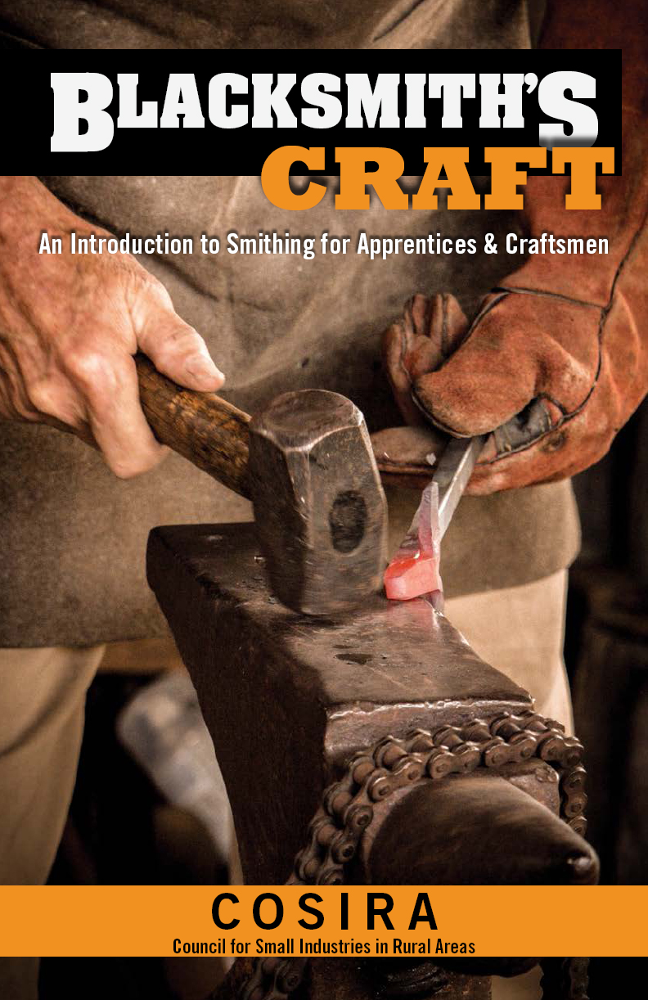


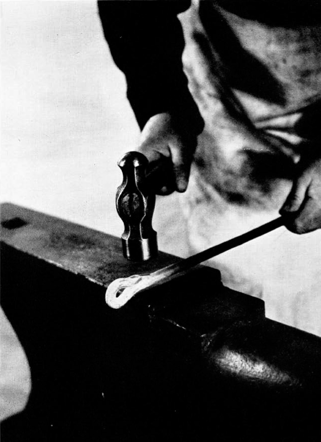
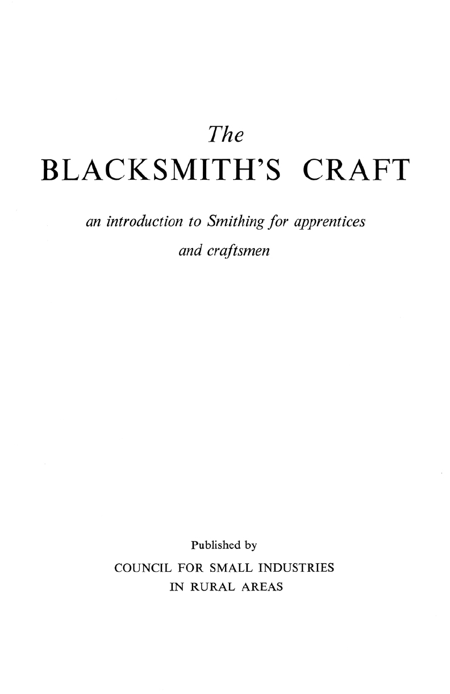

亲爱的读者：
我们非常高兴将COSIRA（农村地区小型工业委员会）的经典《铁匠系列》重新付梓。在我从事书商和出版商工作的35年里，某些标志性的书籍格外突出。这个系列就是其中之一，被认为是经典之作，因为其照片、文字和插图如此完整且高度聚焦于主题。
本系列包括：
• 《铁匠的工艺》(978-1-4971-0046-6)
• 《锻铁工艺》(978-1-4971-0064-0)
• 《装饰性铁艺》(978-1-4971-0063-3)
您手中拿着的是《铁匠的工艺》这一卷。在阅读时，请注意我们没有对技术或工具进行任何更新。请将这个知识宝库视为来自过去的时间胶囊。
愿您受到启发，拿起铁匠的锤子，尝试这门古老的技艺。
尽情享受！
Alan Giagnocavo，出版人
Fox Chapel Publishing
© 1952 by Rural Development Commission. 本版本版权所有 ©2019 by Fox Chapel Publishing.
版权所有。《铁匠的工艺》最初由Rural Development Commission在英国以《The Blacksmith’s Craft》为标题出版。本版本由Fox Chapel Publishing Company, Inc出版，地址：903 Square Street, Mount Joy, PA 17552.
本书所含图案由作者拥有版权。读者可以复制这些图案供个人使用。但是，这些图案本身不得在任何情况下复制用于转售或分发。任何此类复制均属侵犯版权法的行为。
印刷版ISBN 978-1-4971-0046-6
电子版ISBN 9781607657286
编目数据存档于美国国会图书馆
要了解Fox Chapel Publishing的更多优秀图书，或查找您附近的零售商，请拨打免费电话800-457-9112或访问我们的网站 www.FoxChapelPublishing.com.
我们一直在寻找有才华的作者。如需提交想法，请发送简短咨询至 acquisitions@foxchapelpublishing.com.
前言
引言
第一部分
章节
1 铁匠的设备
炉床(Hearth)
鼓风装置
铁砧(Anvil)
工作台
台钳
工具架
钳子架
地面心轴(Mandrel)
型砧(Swage Block)
2 铁匠的工具
锤子
钳子
冷錾
热錾
冷切刀(Cold Set)
热切刀(Hot Set)
下錾(Hardie)
热加工冲头
冲模(Drift)
凹槽工具(Fuller)
平整锤和定型锤
型模(Swage)
手持心轴
耙齿托座(Bolster)
3 铁匠的炉火
燃料
炉火工具
炉火
炉火管理
4 铁匠的工作
加热
拉伸锻打(Drawing Down)
弯曲
镦粗或锤击隆起(Upsetting)
热切割
冲孔和扩孔
火焊
火焊操作说明
热处理
5 铁匠的材料
锻铁(Wrought Iron)
低碳钢(Mild Steel)
中碳钢(Medium Carbon Steel)
高碳钢(High Carbon Steel)
合金钢
冷金属切断
课程
1 拉伸锻打
2 链条夹和U型螺栓
3 ’S’形钩
4 非焊接孔眼
5 耙子划线规或划针
6 方形门闩扣板
7 带刺门钩
8 开口环
9 焊接并拉伸成尖端
10 链环
11 固定夹(Holdfast)
12 管钩
圆环
课程
13 侧面斜面焊接圆环
14 顶部斜面焊接圆环
15 旋转并焊接的眼栓
16 挽具和牵引钩
17 带旋转孔眼的’D’形卸扣
18 带冲孔孔眼的’D’形和弓形卸扣
19 蘑菇头卸扣销和开口销
20 六角头螺栓
21 台肩卸扣销
22 焊接开口销
23 冲孔耙杆
24 耙齿
25 耙子牵引钩
按尺寸弯曲
课程
26 圆角弯曲
27 车辕夹
28 平面直角弯曲
29 锻造直角弯曲
30 直斜面焊接
31 劈裂焊接(Cleft Weld)
32 楔入焊接直角(Glut Weld)
33 孔眼焊接到柄部
34 斜面和劈裂’T’形焊接
35 ’T’形嵌入焊接
36 斜角和直斜面角焊
37 铁匠钳
插图
图
1 犁配件
2 炉床
3 鼓风装置
4 铁砧
5 铁砧
6 工作台
7 工具架
8 地面心轴
9 型砧
10 锤子
11 钳子
12 冷錾
13 热錾
14 冷切刀
15 热切刀
16 下錾
17 冲头
18 冲模
19 小型凹槽工具
20 大型凹槽工具
21 平整锤
22 型模
23 手持心轴
24 耙齿托座
25 耙齿托座
26 炉火工具
27 拖把棒(Swab)
28 炉火
29 点火准备
30 点燃炉火
31 炉火冲破
32 清除热炉渣
33 冷金属切断
34 冷金属切断
35 冷金属切断
36 冷金属切断
37 圆环
注：第二、三、四部分课程中的线条图和半色调插图不包含在本列表中。
本书由英国农村小型工业委员会出版，因为目前似乎没有一本关于锻造铁匠(blacksmithing)的教科书能够满足工匠、技术学校和徒弟培训中心的需求。这样一本书的缺失对这门学科的教学造成了障碍，特别是对于那些在委员会乡村工作坊接受培训的年轻人。虽然本书主要是为这些人编写的，但它对许多其他依赖于扎实掌握铁和钢的性能知识的工匠和徒弟也具有重要价值。
铁匠的技艺通过一系列静态照片配以简短的描述性说明忠实地记录下来。这些序列按课程编排，如果仔细学习文字、图纸和照片，应该不难理解。委员会意识到所展示和描述的一些方法并非唯一可行的方法。在这种情况下，已经仔细考虑了各种变化，所选择的方法是那些对初学者来说最合适的：随着经验的积累，铁匠可以发展出自己的技术变化。
铁匠也坐在铁砧旁，
思考着铁的工艺，
火焰的蒸汽消耗着他的肉体，
他与熔炉的高温搏斗；
锤子和铁砧的敲击声总在他耳边回响，
他的眼睛始终盯着他制作的物品的形状；
他专心致志地完成他的工作，
并注意将其完美打磨：
传道书
锻造(forging)是用铁和钢制作物品的最古老方法。它仍然是一门必不可少的手艺，因为农民仍然需要在农场附近有工作坊，在那里他们可以确保获得高效和及时的维修服务。要在今天提供这样的服务，锻造铁匠的技能必须与气焊或电弧焊接和火焰切割的技术相结合，但只掌握焊接技术而不懂锻造知识的工匠会严重受限。他缺乏锻造技能将迫使他使用焊接和火焰切割来完成那些通过锻造可以做得更便宜更好的工作。
一个例子是图1所示的配件。焊工可以很容易地用气割从任何可用的废料中切割出板材和两个角撑板，但他不太可能有合适的管子。如果不懂锻造知识，制作管子的唯一方法是钻孔并镗削一根实心轴，这是一项缓慢且昂贵的工作。锻造铁匠通过将一块板材在芯棒(mandrel)上卷成管状，然后焊接接缝来制作图1中的管子，从而节省了时间和材料。
在正确的温度下锻造的金属不会失去任何强度，但如果，例如，仅仅用吹管火焰加热一块金属，然后在虎钳上拉拽或锤打，其结构就会被削弱，可能在受力时断裂。在铁砧上加工热金属的锻造铁匠能够以其他方式无法达到的程度理解他的材料。对于那些在业余时间转向装饰铁艺(ornamental ironwork)的铁匠来说尤其如此，因为这对许多铁匠来说不仅是一门令人着迷的创造性艺术和繁重工作的放松，而且是发现铁的特性行为的绝佳方式。由于这些原因，同时掌握焊接技术的锻造铁匠能够为农民提供比不会锻造金属的人更加多样化和有用的服务。
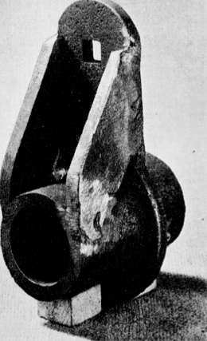
图1
锻造铁匠手艺的基础在下面的章节中阐述。
全书分为四个部分。第一部分描述了铁匠的简单设备和工具、燃料和火炉、工作中使用的工艺流程以及原材料。第二、三、四部分开头描述了一种特定技术，这对每个部分逐步展开的课程至关重要。说明某一技术的每张照片都显示了一些具有特殊技术意义的细节，如身体的位置、手中工具的正确握法、工件持握的角度。每节课的开头都有一幅待制作物品的线图，以便更容易理解练习的渐进阶段，并熟悉图纸与实物的关系。
掌握了这三十七节课的铁匠将了解他手艺的基本要素。
锻造铁匠的设备
锻造设备包括炉床(hearth)、鼓风装置(blast)、铁砧(anvil)以及工作台和虎钳(bench and vice)。
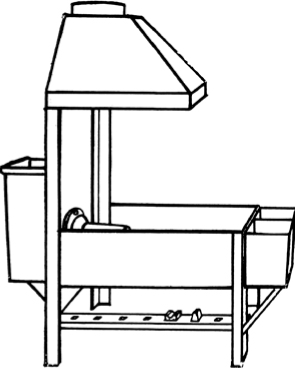
图2
由于铸铁耐腐蚀，它是持续使用的炉床的理想材料，但在间歇性工作的情况下，用低碳钢板制成的炉床也令人满意。英国农村小型工业委员会可以提供一种钢制炉床的图纸(图2)，通过铆接或电弧焊接都很容易制作。重要的是炉床应该比例合适，以便让火在烧过的煤渣和灰烬中形成自己的火床。除了生火的地方，还需要一个水槽和一个燃料容器。最方便的布置如图2所示，其中水槽和燃料槽做成一体并安装在炉床的前面。
炉床的一个重要特征是鼓风管，称为风口(tuyere)或rue
铁。最高效的风口(tuyere)是水冷式的（[图3]中的A），这样它可以很好地伸入火中而不会烧坏前端。在设计良好的炉床中，风口穿过一块可拆卸的铸铁背板。通过风口循环的冷却水装在炉床后面的一个敞口水箱中，如果空间不足，可以用管道将水引到方便的位置。水箱应有盖子以防止污物进入并减少蒸发；明智的做法是使用雨水以避免风口内部结垢。对于一般的修理工作，一个16英寸长、带有气孔的风口是合适的。它水平设置在炉床背面的中心线上，孔位于侧板顶部水平面下3英寸处。
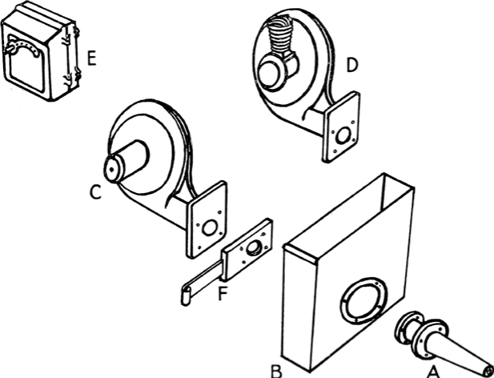
[图3]
鼓风由风箱或手动或动力驱动的鼓风机产生。电动鼓风机（[图3]中的C）是迄今为止最方便的，适合普通炉床的尺寸每天消耗不到一度电。正常尺寸的鼓风机可以为偶尔的工作提供第二个火源。如果没有电，可以获得配备汽油发动机的同类型鼓风机（[图3]中的D）。一种由汽油发动机驱动的装置配有发电机和电池，使其可以自启动，还可以为车间提供12伏照明。虽然可以通过调节器（[图3]中的E）改变电动鼓风机的速度，或通过油门改变发动机驱动装置的速度，但阀门对于精确控制鼓风是必不可少的。这可以是滑动挡板（[图3]中的F）、蝶阀或普通的全通道旋转旋塞阀。无论使用哪种类型，控制装置都应完全平滑地工作，并且在铁匠空闲手容易够到的范围内。
优质铁砧由锻铁或钢制成，顶部为淬硬钢，非常值得额外的成本。在劣质铁砧上工作就像在沙堆上跳跃，而在设置在适当基础上的优质铁砧上工作就像在跳板上跳跃——一次敲击的反弹有助于下一次敲击。铁砧的样式可能因不同用途而异，但对于一般工作，它应该有一个长而精细锥形的尖角(bick)，如[图4]所示，这是一个立在焊接角钢支架上的”伦敦样式”铁砧。虽然铁砧的表面或顶部是淬硬的，但尖角和工作台（尖角和表面之间的方形部分）通常保持软状态。用凿子切断时，在最后一击之前应始终将工件移到工作台上，以避免损坏凿子边缘。在新铁砧上，表面的前后边缘保持锋利，建议用金刚砂锉或便携式研磨机在[图5]所示的位置小心地将这些边缘磨圆。铁砧表面有两个孔：方孔或铁砧工具孔(hardy hole)和圆孔或冲孔。将方孔的边缘倒角是一个好计划，这样铁砧工具(hardy)就可以紧贴铁砧表面；在使用该孔设置略微弯曲的棒材时，这也很方便。铁砧的活力或弹性通过将其安装在木块上得到很大改善，最好由榆木的方形树干制成。这应该至少下沉3英尺到地面，木纹垂直放置。在现代农业工程车间中以这种方式设置铁砧的缺点是木块无法移开。使用钢制或铸铁支架可能更方便，但在空间允许的情况下，使用木块具有明显的优势。
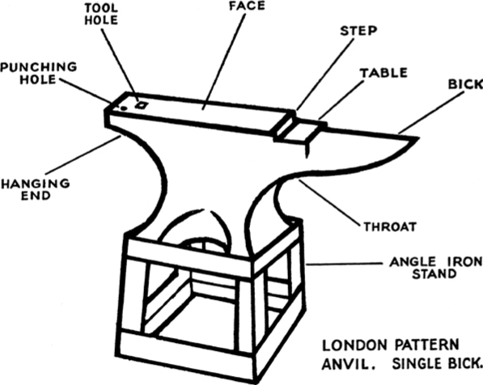
[图4]

[图5]
精心设计和牢固建造的工作台是必不可少的，应该进行规划和设计以节省时间和劳力。[图6]所示的工作台有一个用螺栓固定在角铁框架上的厚重木制台面；安装了两个台钳，最靠近炉床的腿式台钳用于重型铁匠工作，另一端是工程师台钳。将工具放在工作台下架子上的盒子里比放在抽屉里更方便；额外的重量将有助于稳定工作台。为了在工作时保持工作台清爽，应在工作台上方的墙上安装[图6]所示类型的架子。紧靠墙壁的是一条木条，每隔2英寸交替钻有孔，用于放置无法直立在槽中的小工具。在此前面是一个槽，用于放置较长的工具，如锉刀和螺丝刀，再前面是一个宽架子，用于放置当前使用的工具。宽架子前边缘水平钻的孔用于铅笔、划线器、中心冲等。为了保持这些孔清洁，可以从架子底部钻¾英寸的孔，如[图6]左上角插图所示。[图6]右侧插图所示的钳子架可以用两根相距约¾英寸的1×3/16英寸铁条制成，固定在架子前面或任何其他方便的地方。如果空间允许，工作台应靠墙背靠在炉床工作侧，并从窗户或天窗接收自然光。如果架子横跨窗户也没关系，因为工作台仍然会得到光线，此外，工具可以很容易地看到。如果铁匠负担不起安装荧光灯（理想但昂贵），工作台和机器的普通电灯应安装在可调支架上，以便在最需要的地方提供照明。
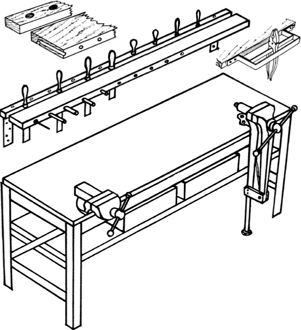
[图6]
钢制腿式台钳（[图6]）仍然是锻造的最佳选择。重型弯曲或锤击应始终在腿式台钳中进行，因为钳口上的应变和冲击由腿承受，腿通常嵌入设置在混凝土地板中的钢套筒中。
平口钳或工程师钳应该也由钢制成，并且最好具有钳口快速释放功能。铸钢工程师钳几乎可以承受任何压力，但较便宜的可锻铸铁钳只应用于装配和精密工作；它不是为重锤击或钳口承受过大应力而设计的，绝不能用于这些目的。
工具架
一种用于放置底模和铁砧型模的工具架如图所示，安装在炉床下方（图2）。
凿子、冲子和冲模可以放在铁砧附近的另一种工具架上，这种工具架是在一块2英寸×2英寸的木材上钻一系列孔制成的，固定在墙上或其他方便的地方，下面有一块2英寸×1英寸的木条，如图7所示。在这种工具架上，每个工具的两端都能看到；没有东西会掉进孔里，灰尘也不会堵塞它们。
钳架
钳架可以由圆钢或扁钢制成，通常用螺栓固定或挂在水槽上，这样它们就靠近炉床。
地面芯轴(Floor Mandrel)
地面芯轴（图8）是一个中空的铸铁锥体，通常齐胸高，用于矫圆小轮箍、圆环和箍圈。
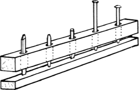
图7
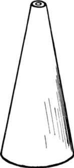
图8
型模块(Swage Block)
型模块（图9）是一块矩形铸铁块，四边都有不同尺寸的半圆形和V形槽口，表面有各种形状的孔。最好将它安装在支架上，这样可以在方便的高度使用任何边缘或表面。
这就是铁匠铺的基本设备。没有给出工作台和铁砧的高度，因为工匠的身高和意见各不相同。一个有用的指导原则是，当正常站立时，你应该能够将肘部放在台钳顶部。
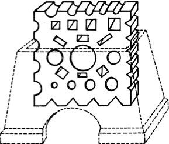
图9
确定最适合你的高度，并确保它正确。很容易就接受了炉子、铁砧或台钳原有的高度，并一直忍受着，而没有意识到稍作调整就能让工作和生活永远轻松得多。
铁匠的工具
铁匠与许多其他工匠不同，能够制作自己的大部分工具，特别是在需要特殊工作的工具时。
主要的手工工具是手锤和大锤、各种各样的凿子、冲子、冲模以及带有不同形状钳口的钳子。为了成型和切割金属，铁匠需要能插入铁砧底模孔的工具和在大锤下使用的其他工具。为了测量和标记，他需要卡尺、圆规、直角尺和尺子，尺子应该用黄铜制成；钢尺很快就会生锈，因为它经常接触热和水。铁匠卡尺的每侧有一个臂，接头外有一个长手柄，特别有用。
锤子
对于日常锻造，铁匠使用重量从1¾磅到3磅的圆头锤。有些人喜欢短柄，有些人喜欢很长的柄，但至关重要的是要有一把平衡适合你的锤子。不要仅仅因为它恰好在手边就使用它。当你找到一把合适的锤子时，明智的做法是保留一把在锤头和手柄上都尽可能匹配的备用锤子。这样，如果手柄在重要工作中间断裂，你就不会因为突然不得不使用平衡不同的锤子而感到不便。虽然铁匠通常不自己制作锤头，但大多数铁匠都有某些特殊用途的特殊锤子（图10），这些锤子要么是他们自己制作的，要么是从标准样式改装的。汽车轴半轴是制作特殊锤头的合适材料。
钳子
初学者必须先购买几把现成的钳子（图11）。钳子的制作在第37课中讲解。
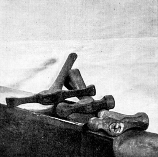
图10
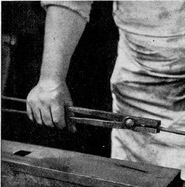
图11
冷凿
用于切割冷铁的凿子（图12）制成短而厚，研磨角度略大于直角。需要各种宽度的，有直切削刃和凸切削刃的。
它们由含碳量约0.875%的钢制成；碳含量低于用于丝锥和板牙的钢，但高于用于镐的钢。合适的钢通常以八角形钢条出售；购买八角形钢是明智的，因为即使钢条的一端生锈变脏，也不会与任何其他金属混淆。用任何现成的钢材废料制作冷凿是不划算的，但值得储备几种合适钢材的尺寸，从平面间距到⅞英寸。
铁匠可能被要求为特殊用途制作冷凿，例如为焊工准备铸件的切削凿，或为其他工匠，特别是砌砖工制作凿子。这些凿子有各种形状，经过回火以适应特定需求。
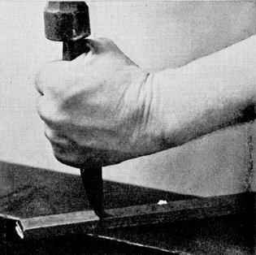
图12
热凿
相比之下，用于切割热铁的凿子（图13）应该做得长，以保持手远离工件的热量，并且纤细，这样凿子就可以像刀切黄油一样被打入软金属中。当凿子变热时，每敲打三到四下后就在水中淬火。应该保留各种各样的形状和尺寸，因为明智地使用热凿可以节省大量时间。
一些铁匠使用锋利的切削刃，但另一些人则喜欢将刃口留下约1/16英寸厚。
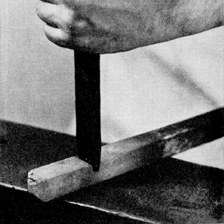
图13
热凿应该由碳含量低于冷凿的钢材制成——0.75%的碳含量是正确的——或者最好使用现在专门销售的特殊合金钢。这两种钢材都可以买到1英寸×½英寸、边缘圆润的棒材。同样值得拥有这种特殊规格的材料，这样就不会弄错。虽然这些工具在使用时会变热,但大多数铁匠发现回火处理它们是有好处的。
冷錾([图14])是在大锤下使用的工具。它们类似于冷凿,但更短更厚,一侧装有手柄。
通常在錾子中部锻造一个凹槽,用扭曲的榛木或缠绕几圈的铁棒,两端留得足够长以形成手柄。榛木棒的两端套上铁环将它们固定在一起;铁棒的两端最好焊接成一个环。
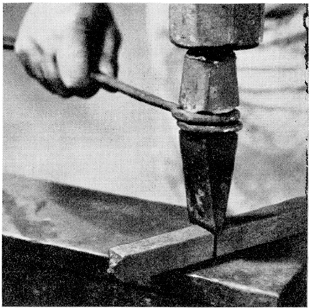
[图14]
有些冷錾像锤子一样装柄,这样在精细工作中可以更好地控制,但它们在正常使用中承受的剧烈震动容易折断手柄或刺痛手部。
它们可以用碳含量低于冷凿的钢材制成,用于制作型砧(swages)的钢材等级就很合适。钢材分级在第5章中有描述。
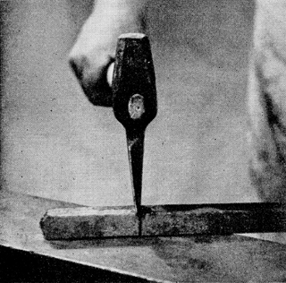
[图15]
热錾([图15])是热凿的大锤版本,由类似材料制成。它们使用时比冷錾更精确,所以最好像锤子一样装柄,因为它们所作用的热铁在很大程度上吸收了冲击。
底凿是安装在砧子方孔中的凿子,工件被压向它们([图16])。一些铁匠制作一个相当坚固的底凿,用于热工和冷工,但更好的做法是分别制作两个,针对各自用途进行适当的成型和回火处理。
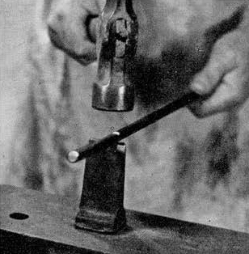
[图16]
用于热工的冲头([图17])可以是圆形、方形或任何其他形状以满足要求。像热凿一样,它们应该足够长以使手远离热源,或者如果较大的话,可以像錾子一样装杆。槽冲头可以打出带圆头的长窄孔,去除最少量的金属。这个孔可以使用冲杆(见下文)扩大或打开,而不会削弱杆件。圆头冲头称为”球头”冲头,用于形成斜面接口(scarfs)。
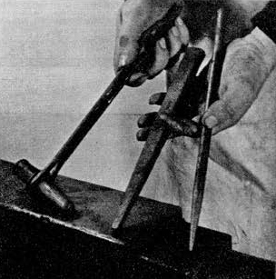
[图17]
冲杆([图18])是任何所需截面的钢件,一端有长锥度,另一端有短锥度;它们被完全打穿冲孔以扩大、成型和平滑孔洞。
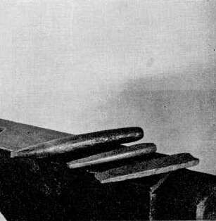
[图18]
这些工具类似于凿子和錾子,但具有圆鼻。它们用于在拉拔销钉和榫头之前制作凸肩,用于锻造特殊形状,以及在特定方向上拉伸金属。
小型圆弧凿([图19])手持使用。
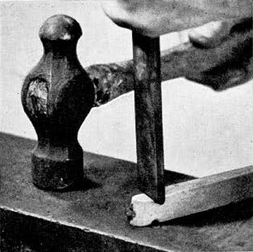
[图19]
大型圆弧凿([图20])装有手柄杆。
底部圆弧凿([图20])安装在砧子的方孔中。
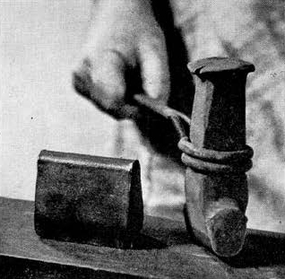
[图20]
这些工具放在工件上并用大锤敲击。根据用途,它们可能具有平面或凸面,边缘尖锐或圆润([图21])。
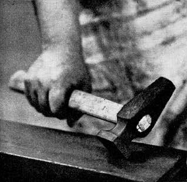
[图21]
型砧是上下工具,铁件在它们之间被加工成型([图22])。底部型砧安装在砧子的方孔中,顶部型砧带有手柄,用大锤或动力锤敲击。型砧可以是任何所需形状,由最低碳含量的工具钢制成。应该专门保留一根1½英寸方钢棒用于此目的,也适合制作大型錾子。
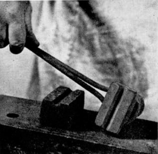
[图22]
这个工具([图23])在砧面上或砧边缘使用,用于拉拔和整圆小环和套环。
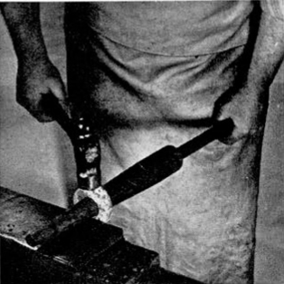
[图23]
[图24]显示了用于在耙齿上形成凸肩的特殊支座。一侧的孔用于形成圆形螺纹部分,略微埋头以防止截面突然变化。方孔的边缘略微凸起,在齿上产生凹形凸肩;当齿拧紧时,这些凸肩的突出边缘将紧压在耙杆上,从而实现刚性连接。
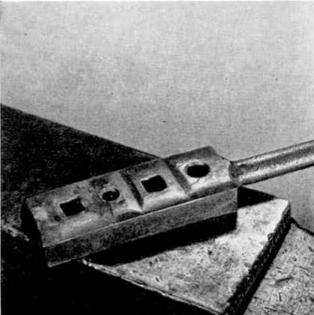
[图24]
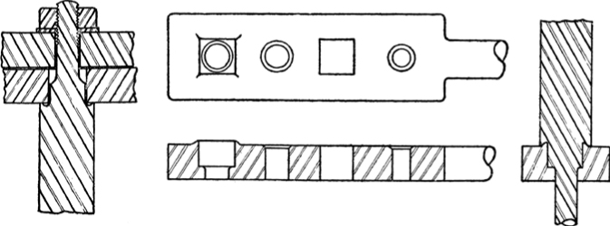
[图25]
支座的横截面显示在[图25]的中心。下方是截面视图,显示圆孔上的埋头边缘和方孔上的凸起凸肩。
右侧图显示了当齿被打入支座时凸肩是如何形成的,左侧图显示了齿在两根耙杆中的组装情况。
[铁匠的炉火]
煤和焦炭碎料都用于锻造,选择似乎主要取决于当地习惯。虽然用任何一种都可以做出一流的工作,但熟悉其中一种的铁匠通常对另一种感到不适应。优质锻造煤应该是沥青质的且不含硫,由于现在很难获得稳定供应,初学者最好使用碎料。这必须是无尘的优质锻造碎料;最合适的尺寸称为”豆粒”。粉碎或破碎的锅炉焦炭或炉焦炭不适合锻造。
管理炉火使用四种工具:拨火棒、铲子、耙子([图26])和
拨棒（[图27]）。这些工具的变化之多超乎想象。有些铁匠从不使用耙子，有些则完全不屑于使用拨棒，但所展示的工具是一套实用工具的典型代表。
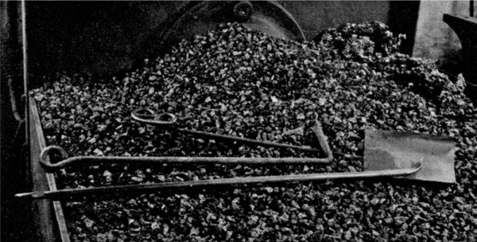
[图 26]
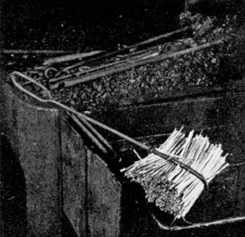
[图 27]
煤和焦炭在点火和保持燃烧方面需要略微不同的管理方式。为了将煤火的燃烧部分限制在所需的大小，需要用水浸湿煤。这样可以延缓燃烧，帮助形成焦炭，并阻碍鼓风的通过。没有必要弄湿煤屑(breeze)，因为它的火焰不会轻易蔓延，而且湿润的煤屑无法形成防风屏障。只要向火中添加足够的新鲜煤屑，并保持火的清洁，火就会自然保持足够的集中。在阅读本章后面关于管理炉火的描述时，应该记住这一区别。
铁匠的炉火不会无限期地稳定燃烧。它会逐渐升温至最佳状态，根据燃料和工作维持这种状态，然后逐渐衰减直到无法使用。使用优质燃料进行粗加工时，炉火可以持续一整天，但使用劣质燃料进行精细工作时，可能一小时内就会熄灭。使用煤时，在开始工作之前要确保有充足的浸湿煤供应，并堆积好随时准备补充炉火。
[图28]是炉火的剖面图，显示一块金属在火心中被加热，风口前方下方形成了一块炉渣(clinker)。
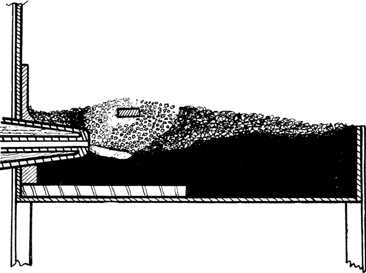
[图 28]
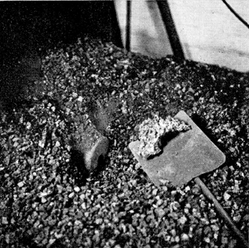
[图 29]
点火时，在风口前挖出一个洞。清除上次加热后肯定会留下的炉渣([图29])，挖出并扔掉多余的灰尘和细灰。煤火只需要一团纸就可以点燃，但焦炭火可能需要木屑或木片。点燃引火物，将燃烧部分推到送风孔旁边，打开微弱的鼓风([图30])。随着引火物燃烧，在上面撒一些干焦炭(在煤火的残余中总能找到一些焦炭或半烧焦的煤)。逐渐增加鼓风，当火焰突破时([图31])，可以直接用新鲜煤屑添加。新煤绝不应该堆在火的顶部，而应该从外部逐渐加入，这样煤中的杂质在接触金属之前就会被烧掉。湿煤应该堆在四周，用铲子边缘逐渐推入火心。
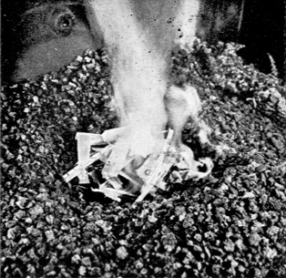
[图 30]
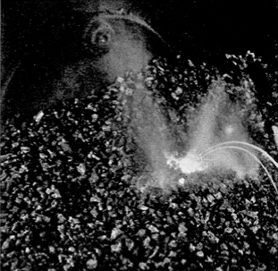
[图 31]
管理炉火有三个目标。
保持炉火尽可能小。 炉火的全部目的是加热金属，超出这个目的的任何部分都既浪费又麻烦。绝不要使用超过必要的鼓风量来保持工作所需的火的大小和热度。
防止炉火烧空。 火的热量必须在中间，紧靠被加热金属的正下方。空心火在需要热量的地方没有燃料产生热量。而且未燃烧的鼓风空气会接触到热金属，氧化表面，甚至可能烧坏金属无法修复。
对抗炉渣。 炉渣是铁匠最大的麻烦。冷的炉渣像粗糙的黑色玻璃；热的炉渣像黑色糖浆。它是由鼓风中的氧气与所有燃料中或多或少存在的杂质结合产生的。这是不使用超过必要鼓风量的另一个原因。
随着燃料燃烧，炉渣以熔融状态形成，滴落到炉火底部，就在送风孔前面。炉渣在这里阻碍鼓风，碎片被吹向上方并粘在热金属上，给它覆盖一层熔融涂层。这种状态的金属无法锻接(weld)，当受到敲击时，熔融炉渣会从锤子下喷出并烧伤手。这不仅疼痛，还会干扰工作。
除非使用非常好的燃料，否则炉火几乎一开始自由燃烧就会变脏。这个阶段唯一能做的就是坚持加热一两次，尽管很脏。然后关闭鼓风几分钟，让液态炉渣冷却并充分凝固，用拨火棍的尖端一次性钩出整块，拨火棍的尖端为此专门做成扁平弯曲的形状([图32])。
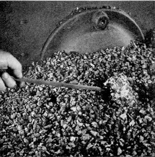
[图 32]
需要大量的判断力才能准确知道炉渣必须冷却多长时间，何时准备好被钩住，以及在哪里找到它。即便如此，在不扰动炉火的情况下将其全部清除也是一项相当高超的技能。除了实践，没有任何真正的帮助。有时炉渣不会形成一整块，或者整块会碎裂，但无论哪种情况，都可以通过它们更明亮的红热、光滑的表面，以及一旦开始冷却就会发出的特有的”叮当、叮当”声，将碎片与冷却炉火中暗淡发光的燃料区分开来。对铁匠来说，地狱不是一个充满火焰和高温的地方，而是充满炉渣的地方。
被加热的金属应该保持在炉火热部的顶部附近，下面有充足的活燃料床，上面有足够的发光焦炭覆盖。记住，煤火在燃烧时总会产生一些焦炭。这层覆盖物不仅可以防止热量从金属中辐射出去，还可以在火上方空气中的游离氧到达热金属并氧化它之前将其烧掉。
因此，金属绝不应该在火的顶部被加热到红热状态——始终将其保持在表面以下，在那里它受到空气的保护，而且火更热。
铁匠工作包括在适当的温度下通过锤击来锻造铁和钢，使其成为所需的形状，锤击可以直接作用于金属上，也可以通过工具传递。第二、三、四部分详细解释和演示了每个锻造操作，这些操作可以单独进行或组合使用。使用的各种工艺总结如下：
铁匠必须了解铁过烧的迹象和影响，并能够立即识别特定操作所需的正确温度，这一点非常重要。在整个课程中会看到”加热到[明红]温度”或”加热到[完全焊接]温度”的指示，初学者最好用铁棒练习，以便能够通过目测判断特定用途所需的温度。
始终在普通日光下观察铁料。注意窗户的布置，确保阳光不会直接照射到炉床或铁砧上，因为这会使判断金属温度变得非常困难。
温热是将金属缓慢通过火炉加热，直到刚好烫手无法安全触摸。这是在不消除回火的情况下”定型”弹簧的正确温度。
黑热在日光下看不到红色，但金属在黑暗中会微微发红。这个温度不用于任何锻造操作，但可用于在装饰铁艺上获得油黑或哑光黑色表面。
暗红或血红温度用于低碳钢的简单弯曲和碳钢的锻造。它略高于淬火碳钢以获得最大硬度所需的温度。
明红温度。低碳钢的简单锻造操作在此温度下进行，例如在铁砧上弯曲、轻度冲孔和热切削。
明黄或接近焊接温度。低碳钢和熟铁(wrought iron)的主要锻造操作在此温度下进行,包括拔长、镦粗、准备坡口以及重型工件的冲孔。这是锻造高速钢的正确温度，但碳钢不应加热到这么高。
轻焊接、出汗或滑溜温度。虽然这个温度对于焊接许多等级的低碳钢来说不够热，但如果在更高温度下遇到困难，有时也能成功使用。用滑溜温度焊接低碳钢需要相当高的技巧。
熟铁可以在此温度下锻造。
完全焊接温度。如果鼓风正确，炉火有良好的炉心，火中的红色火花中会开始出现一些白色爆裂火花。这是焊接大多数类型低碳钢的正确温度。空心炉火和鼓风不足也会产生白色火花，但在这种情况下，金属表面正在被烧蚀而没有达到正确的焊接温度。
白热或雪球温度对于焊接低碳钢来说太高了，但是焊接优质熟铁的正确温度。熟铁在此温度下具有海绵状质地，但通过正确的锻造可以恢复到正常状态。
拔长需要[接近焊接]温度，是增加金属长度并同时减小其横截面积的过程。最简单的例子是通过锤击在圆形或方形棒上形成尖端，这在第1课中有描述。在重型工件上，可以通过在上下工具之间使用压肩工具(fullering)或使用铁砧的鸟嘴来更快地完成拔长，如第9课C所示。
这有时可以冷加工完成，但最好在[明红]温度下进行。可以在铁砧或鸟嘴上进行弯曲，如第2、3和4课所示，有时也可在型砧(swage block)上进行。弯曲外侧的金属受到拉伸作用，而内侧受到镦压。这就是为什么第29课中描述的方形外角弯曲必须首先通过镦粗金属来形成，以提供外侧所需的额外材料。
这个操作在[接近焊接]温度下进行，用于在金属棒的某个特定位置膨胀或增加横截面，同时减少其总长度。要在需要膨胀的确切位置镦粗金属需要大量练习，建议初学者分阶段完成这项工作，用水冷却棒材，只留下足够的部分保持正确温度进行第一次膨胀。然后应重新加热棒材，继续镦粗到所需量。
热切削使用热錾子和定位工具完成；金属的部分要么被完全切除，要么在某些情况下做出一个切口并打开以接收另一块进行焊接，如第5、20、31和32课所示。[明红]温度最适合热切削。冷切削在第[页]页描述。
这些操作最好在工件处于[接近焊接]温度时进行。如果孔很深，金属会在冲头周围收缩，冲头应在每敲击三四下后抽出并在水中淬火。扩孔器(drift)用于完成冲得比所需尺寸小的孔，可能需要进行两次或更多次加热才能令人满意地完成工作；这在第16课中有描述。冲深孔时，在重新放入冲头前向孔中撒几粒燃料。当冲头再次打入时形成的气体会迅速将其吹出，既节省时间又省事。
火焊是将两块金属在塑性状态下通过锤打接合在一起的操作。课程中解释了不同类型的焊接，即使是最简单的火焊也需要大量练习才能掌握，而且有些等级的低碳钢会带来困难，需要巧妙地运用正确的技术。火焊的基本条件如下:
金属经过适当准备以适应所需的焊接类型。
无炉渣的清洁炉火，炉心良好。
凭肉眼准确判断正确的焊接温度，不同类型的钢和铁从浅焊接温度到白热温度各有不同。
快速从火中取出金属并将各部件放置在铁砧上的正确位置，紧接着在加热金属的适当位置按正确顺序快速准确地锤打。
需要大量练习来发展和协调所有这些基本要素，最困难的是判断正确的焊接温度，优质锻铁的焊接温度范围从明亮闪烁的白热到低碳钢的刚开始变白的明亮红热。
在尝试包含此操作的任何课程之前，应阅读以下关于火焊的说明并彻底理解其步骤。
火焊过程中总会损失一定量的金属，因此必须先镦粗或加厚端部。然后将镦粗的端部锻造成斜面(scarf)，将它们放在一起时必须”配对”。塑造斜面时的重要因素是确保两块金属之间的接触点在中间，这样当金属被锤打时，任何氧化皮或氧化物都会被挤压到外部而不是困在中心。
斜面不应太短以致在”粘合”前滑开，也不应太长否则在加厚部分达到焊接温度之前边缘就会烧掉。
虽然可以不使用助焊剂进行焊接，但使用银砂或”Laffite”焊接片等预备火焊化合物之一通常是有利的。
使用银砂时，将待焊接的部件并排放入炉火中，斜面朝下，加热到接近焊接温度。然后依次将每块从火中取出片刻，在斜面表面撒上少量银砂，银砂立即熔化并流过铁面，清除可能已开始形成的任何氧化皮或氧化物。然后将两块部件仍保持面朝下放回火中，稍微移动一下以使每块均匀受热。
以下动作的完成速度必须比描述快得多。一旦达到焊接温度，立即取出第一块部件，斜面仍朝下。在铁砧边缘敲击以抖掉粘附的熔化银砂和污垢，立即翻转过来面朝上放在铁砧上。
第二块也从火中取出时面朝下，同样在铁砧边缘敲击以抖掉污垢，不翻转，直接放在第一块上方的适当位置。然后在焊接中心进行第一次锤打。
一些经验丰富的铁匠可以从最初几次锤打的声音判断焊接是否成功。沉闷或坚硬的铃声表明焊接未成功。完全可以进行第二次焊接加热以封闭斜面的端部，因为这些部分比金属的较厚部分冷却得快得多，特别是与冷铁砧面接触的底部。
如果使用Laffite，步骤略有不同——当准备好的部件加热到暗红热时将其从火中取出，在斜面之间放一块比焊接区域稍大的Laffite片，用轻锤敲打直到它熔化并扩散到斜面表面，使其粘在一起。然后将粘合的部件小心地放回火中并加热到浅焊接温度，取出后用锤子轻轻敲打几下使其结合。然后将它们放回火中再次加热到浅焊接温度，轻松而确定地完成工作。
热处理应用于钢材以根据需要使其更硬、更韧或更软。这些性质取决于钢的成分结合其接受的热处理(参见第5章铁匠材料)。虽然明火不是执行所有这些工艺的理想方法，但铁匠经常对小物件进行五种类型的热处理，以下简要说明仅用于解释所用术语的含义。应通过研究本出版物末尾列出的书籍中的相关章节来获取更详细的信息。
淬火是通过将中碳钢和高碳钢缓慢均匀地加热到黑热和暗红热之间的正确温度，然后根据钢的成分和所需硬度在某种合适的冷却介质(如水、油或盐水)中突然淬火来进行的。
回火。 如前所述通过淬火硬化的碳钢非常脆，在这种状态下对切削工具来说毫无用处,特别是那些需要承受冲击的工具。必须牺牲部分硬度以获得所需的韧性,这是通过将金属重新加热到低于硬化所需的温度,然后在冷却介质中较为缓慢地冷却来实现的。所需的回火程度通过控制金属重新加热的温度来获得,从小型刃具工具的高温或硬回火到某些类型弹簧的低温或软回火不等。
退火 是一种软化工艺,通过将钢加热到正确温度,然后让其在熄灭的火中缓慢冷却,或将金属埋在热灰或干石灰中进行。
正火 与退火的不同之处在于,虽然金属被加热到相同温度,但允许其在空气中自然冷却。冷却时不应将其放在冷地板或其他冷表面上,也不应暴露在通风处。在物品投入使用之前,对任何已经过锻造或焊接的钢进行正火处理是有益的。
渗碳硬化 是一种工艺,通过该工艺可以在碳含量不足以通过加热和淬火使其硬化的钢上获得坚硬的表层。具体做法是将需要渗碳硬化的物品与特殊的渗碳硬化化合物(如’Kasenit’)一起装入合适的金属容器中,然后将整个容器加热至红热(900°C),并在此温度下保温一段时间,然后让其缓慢冷却。化合物中的碳渗透到金属表层并与钢结合,当物品随后通过重新加热和快速淬火进行硬化时,会产生极硬的表面。
[铁匠的材料]
熟铁
熟铁长期以来一直被视为铁匠加工的传统材料,用低碳钢替代熟铁进行大多数锻造工作,对于那些早期经验不包括锻造和焊接低碳钢(这需要改进的技术)的老工匠来说,仍然是一件令人遗憾的事。
熟铁是通过在特殊炉床中搅炼生铁生产的,比低碳钢更昂贵。商业熟铁含有约0.04%的碳和0.2%的炉渣,在制造过程中,炉渣被锤打或挤压分布于金属的整个质量中,产生了众所周知的纤维结构,这使得熟铁在横断面断裂时非常容易识别。熟铁具有的两个重要品质是其延展能力——“延展性”,以及其被锤打成型的能力——“可锻性”。
可锻的铁不一定具有延展性,冷态下具有这些品质之一的铁在热态下不一定具有这些品质,反之亦然。
冷态下容易断裂的铁称为”冷脆”,热态下容易断裂的铁称为”热脆”。这些最不受欢迎的品质是由金属中的杂质引起的,过量的磷和硫使其冷脆,过量的硅使其热脆。
由于碳含量低,熟铁具有高度的可锻性和延展性,铁匠很容易对其进行锻造和焊接。它曾广泛用于各类建筑工程,但现在仅限于工业中少数需要延展性和耐腐蚀性而非高抗拉强度的特殊用途。
然而,正是这些特殊特性使熟铁非常适合装饰性铁艺,许多铁匠仍然青睐熟铁。熟铁的质地通过精心锻造得到改善,与低碳钢相比,它可以更轻松地加工和焊接成最复杂、精致和优雅的形状。
熟铁可以在比低碳钢更宽的温度范围内加工,因此尽管成本高昂,少量储备的熟铁对于棘手的工作特别有价值。例如,焊接到钢柄上的小套环,最好用熟铁制作,因为在整个工件达到正确焊接温度之前,套环自然会受到额外的热量,而熟铁能够承受这种热量。
钢 是应用于纯铁和碳的合金的通用术语。钢的品质由其制造中使用的铁和合金成分的选择决定,而不是由其碳含量或断口外观决定。钢的钢性是指碳含量,与品质无关。该术语不应与第4章描述的热处理中使用的”回火”混淆。有关碳钢回火的详细信息可在Balfour的《钢的提示》中找到[在书末列出]。
低碳钢
低碳钢含有0.2%至0.3%的碳,可以在比熟铁更窄的温度范围内轻松锻造和焊接。它的延展性和可锻性不如熟铁,但具有更高的抗拉强度,这是大多数锻件的基本特性。它不能硬化或回火,断裂时显示出颗粒状或非纤维结构。
中碳钢
中碳钢含有0.5%至0.6%的碳,比低碳钢更硬更强,易于锻造但不易焊接。虽然它不能回火以保持切削刃,但可以在一定程度上硬化。
高碳钢
高碳钢含有0.75%至1.5%的碳,可以高度硬化并回火以保持切削刃。
在锻炉中加工高碳钢时，必须格外小心，因为它们的锻造和热处理温度范围相对较窄，很容易被氧化或烧毁而无法恢复。高碳钢通常根据其碳含量分为六种回火等级。不同制造商有各自的分类系统；以下可能是最常见的，由Arthur Balfour & Co. Ltd.使用。
回火5号（0.875%碳含量）最适合制作铁匠和钳工的切削工具，如冷錾子、冲头等。
回火6号（0.75%碳含量）用于制作锤头、热冲头、冲子和冲孔器。
合金钢
合金钢包括多种钢材，除碳外还含有其他成分，这些成分赋予它们特殊的性能。
本书不涉及描述多种钢材类型的化学成分或物理机械性能，建议学生阅读有关此主题的专业书籍。
注：本书中”金属”一词通用于指代锻铁或钢。如果特指其中之一，则会用名称标明。
第一部分介绍了铁匠铺及其设备和工具、燃料和火炉以及他在工作中使用的工艺。学生现在可以开始实践工作了；前十二课为他提供了锻造的基础练习，包括轻型材料的简单锻造和焊接。
在每节课中，必须将要使用的材料切割到所需长度，虽然本书后面才会涉及重型截面的金属，但这里给出了切割轻型和重型截面的说明。
冷切轻型截面金属
轻型截面条材可以用冷錾子切割，也可以在铁砧錾上切割。不必完全切断条材。应在条材周围均匀地切出缺口，如图33所示，这样端部就容易修整。然后可以将条材折断，如果端部较短，可以在砧面远侧用锤子敲击折断，如图34所示；否则可以在砧边上敲击条材本身来折断。切割短段时，注意端部不要飞起来打到眼睛。
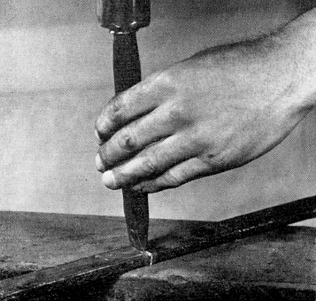
图33
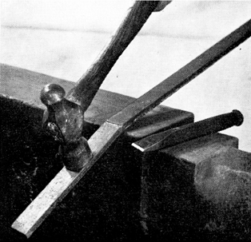
图34
冷切重型截面金属
切割重型截面时使用冷冲头和大锤；需要一个助手，同样不必完全切断条材；在周围切缺口就足够了。如图35所示。如果要对条材进行镦粗，将端部修整成图36所示的形状是有利的。这将防止端部过度膨胀，并通过使击打力居中，减少条材弯曲的趋势。
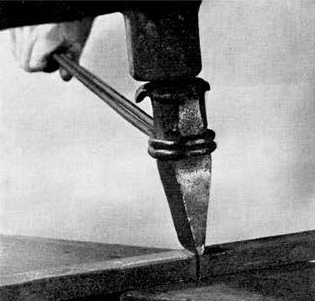
图35
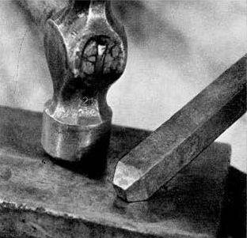
图36

握锤方法
需要练习才能将金属打在正确的位置。
正确握锤有助于此，像这样在锤柄末端附近握住它，从肘部自由挥动，而不是从肩部。
不要通过在锤头正下方握持来”扼住”锤子。
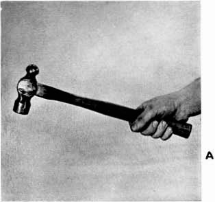
錾形端部
对工件进行近焊接热度的加热。
将其以略微倾斜的角度放在砧面上。朝钳子方向以更陡的角度锤击它。这将使端部变薄和展开。
不要试图用锤子推动金属，要正面直击。
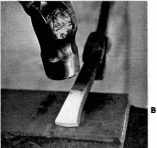
锤击一两次后，将工件侧翻，平放在砧面上，修正展开部分。
持续锻造，先在平面上，然后在侧面上，从尖端开始向后工作，直到完成。
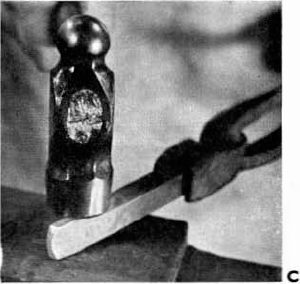
锻造方尖的关键是在锤击之间快速准确地转动手腕90度。
看握钳的手，先这样—
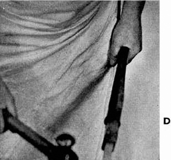
然后这样—
注意手腕旋转四分之一圈。
每次重新加热金属时进行轻度焊接热度加热，这样随后的锤击可以抵消任何开裂的趋势。
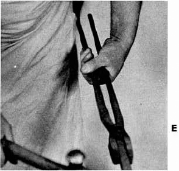
先拔成一个突然的尖端，然后向后加工，直到尖端长3英寸。
注：拔长重型截面时，在砧嘴顶部加工，因为这产生凹槽作用，使金属拔得更快。（见第9课C。）然后在砧面上完成尖端，像这样—
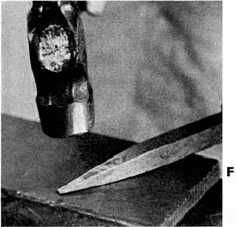
圆尖
要从圆条或方条制作圆尖，首先需要制作一个方尖。然后锤击每个角以使尖端呈八边形，如下所示—
接下来，将尖端倒圆。

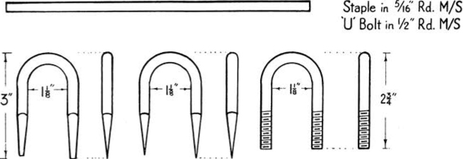
链条钉
切下7英寸的5/16英寸圆形低碳钢。
进行近焊接热度加热，并按照第1课所示拔出尖端。
在亮红热度时，开始在砧嘴周围成形弯曲，保持尖端对齐。
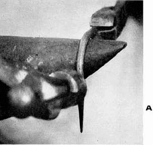
继续像这样弯曲工件成均匀的半圆，仍然保持尖端对齐。
初学者可以在一根直径1⅛英寸的圆条上测试半径以检查目测。
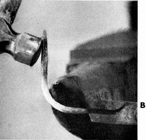
完成像这样—
让一个尖端比另一个略长，这有助于在将钉子打入木材时正确定位。
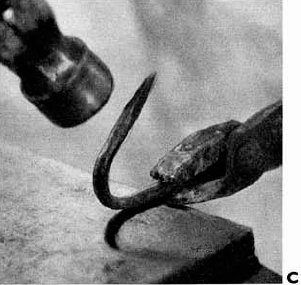
U形螺栓
切下7英寸的½英寸圆形低碳钢。
制作U形螺栓时，首先像这样倒角端部—
然后像链条钉一样弯曲成形。
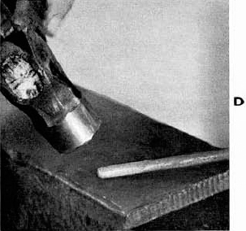
将一端夹在台钳中，扭转U形的中间部分，使两端几乎成直角，如图所示—
这样可以留出旋转板牙架(die stock)的空间。
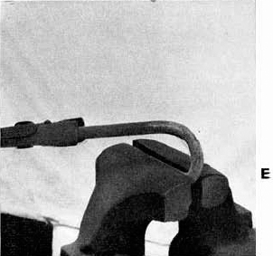
在螺纹加工前让其冷却。
然后将其扭回U形，当螺栓平放在砧面上时，用轻锤敲击使其校正。
课程3 ’S’形挂钩
加热至鲜红热(BRIGHT RED heat)，将钢条末端平放在砧面上，用锤子打磨成短斜面，像这样—
这样当钩眼闭合时，两端就能紧密贴合到挂钩的中部。
开始在砧嘴(bick)上敲击末端来形成第一个钩眼，像这样，然后按照课程2 B继续操作。
在另一端重复操作，但钩眼方向相反。
这是完成的挂钩，两个钩眼大小相等。
用一根1英寸直径的圆棒测试它们，在S形挂钩需要使用之前保持钩眼打开如图所示。
课程4 非焊接钩眼
从钢条一端量取5英寸并做标记，如图所示。
加热至鲜红热(BRIGHT RED heat)，将标记处放在砧的圆边上。锤子的第一击应该是垂直向下的，然后以这个角度—
每一次敲击，自由端都会向上弹起，开始形成钩眼的弯曲。
在部分成型的第二个弯曲处再次加热。用水冷却第一个弯曲处，继续像这样形成钩眼—
在砧嘴(bick)上完成钩眼。
通过轻轻敲击钩眼外侧来闭合，用一根1¼英寸直径的圆棒测试。
课程5 耙规或划线器
在形成钩眼之前，必须通过添加额外金属的方式来加强环根部的锐角弯曲，这种额外金属是用⅜英寸圆棒制成的小楔子，焊接到杆上。
在鲜红热(BRIGHT RED heat)时，首先将楔子拉制成凿尖，像这样—
接下来必须在楔子的两侧各做一个凹痕，以防止它在焊接时脱落，因此在接近焊接热度(NEAR WELDING heat)时，将楔子末端放在砧的角上，用锤子这样敲击—
将楔子末端放在砧台上，用热錾子(hot chisel)切下约½英寸。
在⅜英寸圆棒距离末端5½英寸处用中心冲做标记。
加热至接近焊接热度(NEAR WELDING heat)，在标记处弯曲成发夹形。
插入楔子并闭合发夹以紧紧夹住它。
清理炉火，加热至完全焊接热度(FULL WELDING heat)。握住钢条，使发夹的短腿竖立，像这样—
用中等力度的锤击以图示角度焊接楔子。
将发夹放平并锤击两侧。
使用带弯曲刃口的小型热錾子(hot chisel)修整多余的金属,留下整齐的圆角。
这比粗糙和参差不齐的边缘强度高得多，因为光滑流畅的曲线不会引发裂纹。
在短端处再次加热，开始在砧嘴(bick)上像这样向内弯曲,然后像课程4 C中那样翻转过来，将钩眼闭合成下图H所示的形状。
这是完成的钩眼—
将末端压平，如图所示。
要完成划线器，加热另一端，按照给定的尺寸弯曲，像这样—
然后切断使其与图中所示的尖端匹配。
课程6 方形门闩挡板
从一块½英寸×¾英寸的扁钢上切下5¼英寸，在距离两端1英寸和1¹¹⁄₁₆英寸处做标记。
加热至接近焊接热度(NEAR WELDING heat)，将最靠近末端的冲眼标记放在砧的近边上，用锤跟这样敲击来锻造台肩(shoulder)—
将末端拉制成尖形，然后在另一端重复操作。
为了防止台钳钳口的锐边划伤或使弯曲内侧开裂，使用顶边圆润的台钳护板(vice jaw clamps)。
加热至鲜红热(BRIGHT RED heat)，夹在台钳中，使第二个标记在护板边缘上。为了使拐角尽可能方正，首先用钳子向下拉末端，留下一个拱形，像这样—
接下来将拱形锤回拐角方向。在图片中，锤子不仅向下运动，而且整体向右移动。这被称为拉拔锤击(drawing blow)。
加热另一端并重复操作。
课程7 带刺门钩
取一根10英寸长的⅜英寸圆形低碳钢，将一端弯成内径为⅝英寸的紧密钩眼。
从另一端量取3¾英寸做标记，在鲜红热(BRIGHT RED heat)时用錾子在距离末端¾英寸处刻出缺口，将末端完全折回。
在折叠的末端加热至完全焊接热度(FULL WELDING heat)，用中等力度锤击焊接，将尖端拉制成凿形端。保持倒刺(barb)的顶部台肩锐利方正，两侧平整，像这样—
这是完成的末端。
重新加热至鲜红热(BRIGHT RED)，将冲眼标记放在砧边上，弯曲成直角，倒刺(barb)头部朝外。要完成钩子，转成半圆形，如图所示。
确保钩子和钩眼在一条线上。
课程8 开口连接环
切下8英寸的⁵⁄₁₆英寸圆钢，在距离两端各2英寸处做标记。
在接近焊接热度(NEAR WELDING heat)时，将钢棒两端拉制成钝尖。
接下来使用下型模(bottom swage)，将每个末端锻造成半圆截面，直到冲眼标记处。
在鲜红热(BRIGHT RED heat)时，将每个末端弯成完全相同的半径，这样当它们组合在一起时能够均匀配对。
如有必要，重新加热，在砧嘴(bick)上弯曲中心部分，使两端对齐但保持¼”的间隔。
当分叉的两端合拢时，其厚度应该与链环其余部分的厚度几乎相同。
首先将钢条的一端偏置，以便更方便地用钳子夹持。
加热至亮红色，将钢条折回成紧密的发夹形状。
清理炉火。
加热至完全焊接温度，将钢条平放在砧面上，用重锤焊接，从弯曲处向后敲打以排出炉渣。快速处理端部，确保背面焊接牢固。可能需要第二次加热。
通过拉拔成长方形尖端来测试焊接质量。
这种尺寸的金属应该先在砧嘴上锻造，因为砧嘴的弯曲表面会使其沿长度方向延展。因此，拉拔工作将很快完成，因为横向扩展很小。
在拉拔较重的断面时，可以使用大型圆整模(fuller)代替砧嘴。
像这样在砧面上锻造完成尖端—
有缺陷的焊缝在拉拔时会裂开。
冷却后，将尖端插入型砧(swage block)的合适孔中进行进一步测试。在未焊接部分之间打入楔子，用锤子将它们分开。有缺陷的焊缝会如图所示裂开，如前景中放置的部件所示。
从⅜”圆钢上切下6”，按第2课的方法将其弯成U形。
对于没有火焊经验的初学者，在弯曲U形之前，将端部稍微镦粗或加厚可能会有帮助。(参见第13课和第24课。)
在接近焊接温度时，像这样斜向拉制焊接面—
将每一端向另一端弯曲，直到焊接面重叠，然后合拢准备焊接。
在连接或构建链条时，必须在合拢焊接面之前将已完成的链环穿过未焊接的链环。
清理炉火。
加热至完全焊接温度，用轻锤在砧顶上焊接，像这样—
在砧嘴上加工，使焊接处略大于金属的原始直径。这可以在挂在钳子旁边的成品链环顶部的焊接处看到。

这里有三个完成的链环。

取一根约18”长的⅜方钢条，在6½”处做标记，但不要切割。在靠近标记的一端加热至接近焊接温度。
为了在膨胀处产生清晰的台阶，通过在钢条上浇水淬火，将热量限制在最后1¼”。通过将钢条向下敲击砧面来镦粗端部，直到端部的宽度与长度相等，即每边约⅞”。
将钢条保持与砧面平齐，用锤子以45°角敲击，锻入边角。随着操作逐步压平各侧面。
如有必要重新加热，继续在砧的圆边上塑造凸头的台阶。为了保持凸头台阶的清晰轮廓，将左手保持在砧面以下。
将钢条旋转四分之一圈，使手与砧面平齐。仅将凸头放在砧面上，将其锤成偏置圆盘，圆盘的上侧必须与钢条齐平，下侧形成将成为柄部的台阶。
接下来将圆盘竖起，保持在砧的同一部分，通过像这样升降钢条的同时敲击来完成良好的形状—
完成后，圆盘应约为1½”直径 × 3/16”厚。
暂时不要弯折圆盘，否则在拉拔尖端时会难以夹持。
在钢条标记处加热至亮红色，用热錾子在砧台上切断。进行第二次加热，用钳子夹住圆盘端，将另一端拉制成凿尖，侧面略呈锥形，像这样—
将台阶面朝上，在砧的圆边上将圆盘弯成直角，将圆盘外侧压平至台阶，如图所示。
为了形成粗壮的台阶以便将夹具打入墙壁，在距端部约1½”处加热至接近焊接温度，用手持圆整模(fuller)打出凹槽。
利用同一次加热，将端部拉制成细方形尖端，然后将其向后压平至凹槽处以形成台阶。
压平的端部应该看起来像一个3”长的矛头，中间有一条凸筋。
加热至暗红色并切割至所需长度。用钳子夹住压平端，加热至接近焊接温度并拉制成长凿尖。然后用钳子夹住尖端，像这样在砧嘴上弯曲压平部分以完成钩形—
用1”孔径的管子测试。
完成前十二课后,学生应该具备足够的技能来进行更厚截面金属的锻造和焊接。接下来的练习旨在培养按尺寸精确锻造的能力。他会自己了解到,所有铁匠操作都需要大量练习,不能期望第一次就完美完成任何练习。需要相当多的练习才能区分各种加热温度,准确击打金属,并以精确所需的角度施加打击。
必须再三强调,本书中描述的工艺并非铁匠使用的唯一方法。大多数人会发展出自己的技术,其他人则采用他们所在地区世代使用的方法。这里描述的技术被农村地区小型工业委员会认为是学生学习的最佳方法;也是该委员会教员使用的方法。
本节包括焊接环和链环;应仔细学习以下关于环的一般说明以及计算所需材料量的方法。
铁匠需要制作的环大致分为三类:
[图37]
(前车架转动所用的环)。
平面弯曲的环,范围从套圈到车轮轮箍。
各种尺寸的圆形和方形截面环。
直径或边长达⅜英寸的金属在削尖端部前不需要镦粗,因为焊接可以很快完成而不会造成浪费。所有扁平金属以及⅜英寸以上的圆形和方形截面必须在削尖前镦粗。
方形和圆形截面金属必须削尖,以便焊接从环平放在砧面上开始。对于小环,焊接继续在砧嘴上进行,对于大环,则从内侧进行,环直立在砧面上。
焊接后,小环在手动心轴上整圆([图23,]
[页]),大环在铁匠地面心轴上整圆([图8,][页])。
当测量要弯成环的金属棒时,必须为弯曲和焊接中损失的金属留出一些余量。大多数铁匠都有自己估算这些余量的方法,但初学者需要一些简单实用的系统作为计算基础,例如以下方法。
(a) 要确定弯曲余量,将金属厚度加到成品环的内径上,然后将这个数字乘以3.14。
(b) 要确定焊接余量,取上述得出的最终数字,加上金属厚度的两倍。
要找出制作一个环所需的金属长度(如第14课所示),内径为6英寸,金属厚½英寸:
这个环将在第33课中焊接到柄上,因此必须在第一次焊接中留出额外的金属,以形成后续焊接操作的削尖部分。
使用公式计算并切割所需材料。
在一端取接近焊接温度(NEAR WELDING heat),垂直握住金属棒,将热端放在砧面上,如图所示敲击顶部来镦粗端部—
金属棒中部会轻微弯曲。
每进行两到三次顶部镦粗敲击后,按以下方式矫直弯曲—
加热另一端并以相同方式镦粗。
取亮红热(BRIGHT RED heat)并在砧嘴上成型环,留出端部用于削尖,如下所示—
在接近焊接温度时,使用砧角来形成所需的偏移量,在相对的两侧各形成一个削尖部分,使它们叠放在一起时配对。
像这样紧密地压平削尖部分—然后用轻锤敲击在砧嘴上修整接头。
取完全焊接温度(FULL WELDING heat)并首先在砧面上焊接,如下所示—
一旦焊接感觉牢固,将环转移到砧嘴上。
在砧嘴尖端完成焊接,如下所示—
注意焊接处留下的额外金属。
这个操作和前一个操作必须在同一次加热中完成,所以动作要快。
从½英寸方形棒上切下所需量的金属。
端部必须在弯曲和削尖前镦粗,如本课第一个练习中制作小环时所述。
将削尖部分在砧面上对齐,并在砧嘴上对齐端部,如图所示。
如前所述焊接。
此时学生应该有足够的练习,可以不镦粗端部就焊接⅜英寸圆形环。
计算金属量并切下所需部分。
将环弯成形状,并在平端上形成削尖部分,如下所示—
确保它们在相对的两侧。
将削尖部分对齐,像这样对齐端部—
然后像前面的练习一样焊接。
使用给出的公式计算所需材料长度。
由这种尺寸材料制成的环需要在两端进行更多镦粗。这可以通过”捣击”或端部锤击来完成,取决于金属棒的长度。

使用砧的圆边,在相对的两侧削尖端部,使它们叠放在一起时配对。
在砧嘴上将削尖部分对齐,并在焊接前在砧面上校正端部。
取一个完全焊接热度(FULL WELDING heat)，在弯角(bick)上开始焊接，并在砧面(anvil)的平面上完成。
第15课 转制和焊接眼螺栓
切下一段7/16英寸方棒，长6½英寸，用冷凿子在两侧切槽，以获得平整的端面。剪切总是单面的，会产生不平整的端面，这会导致棒材在顶部敲击进行镦粗(upsetting)时歪斜和弯曲。参见对页插图D。
在棒材上做第一个标记，距一端3英寸，第二个标记距第一个标记1英寸。
在冲孔标记之间取一个近焊接热度(NEAR WELDING heat)。
为了将热度限制在两个标记之间，从端部到第一个标记处浸水冷却，像这样—
如图所示，用锡罐倒水冷却第二个标记以外的部分—
两个冷却操作都必须快速完成，以保持标记之间的最高热度。

要镦粗热的部分，将棒材垂直放在砧上并敲击顶部，像这样—
每敲击两三下后，在砧面上矫直产生的弯曲，然后继续镦粗，直到直径增加到9/16英寸。
在短端取一个近焊接热度，拉制成钝尖以形成斜面(scarf)。
在¾英寸直径的冲杆(drift)上从镦粗部分弯曲此端，像这样—
取一个完全焊接热度，将斜面焊入杆身，眼的弯曲部分放在砧的圆边上，像这样—
用轻锤敲击使焊缝圆滑，在眼与杆身连接处留一个圆角。
在弯角上加工眼部，在焊缝连接处留一个轻微的V形，像这样—
不要使用型模(swage)来使焊缝圆滑，因为这可能会切入环与杆身连接处的圆角而削弱眼部。
第16课 挽具钩和拉链钩
冲眼
在棒材一端取一个近焊接热度，在型模中镦粗直到端部呈球形：
挽具钩用½英寸棒材，长1⅜英寸×宽1英寸；拉链钩用⅝英寸棒材，长1⅜英寸×宽1¼英寸。
在砧面上压平球形以形成扁平的节头。½英寸棒材厚9/16英寸。
⅝英寸棒材厚11/16英寸。
接下来，将槽冲头放在节头上，与杆身对齐，但比端部更靠近肩部。快速敲击穿过热金属，直到冲头停在底面被压缩和冷却在砧面上的坚硬薄层上。
现在，立即拔出冲头并翻转金属。在冲孔的盲端会看到一个黑点。立即将冲头的热端浸入水槽，然后将其敲入这个黑点，直到端部突破到另一面。
一片薄的金属片，大小与孔相同，会被干净地冲出并完全穿透。
可以在发光的节头前面看到它。
接下来在更大的型模中继续镦粗端部。
这将增加眼的直径，并将槽转换成方孔。
要将方孔弄圆，将眼放在砧面的圆孔上，并用冲杆敲击穿过。
现在端部形状几乎完美，在弯角上稍加加工就会产生一个周围都有漂亮倒角边缘的眼。
为了防止边缘切割穿过拉链钩孔的链环，现在必须在砧的弯角上将眼的两侧稍微倒角，像这样—
挽具钩中的眼不能倒角，否则钩会骑过车辕钉的角。
挽具钩
挽具钩上的T形端和菱形端都从相同的操作开始。
取一个近焊接热度，在距端部¼英寸处的两侧各做一个凹槽。使用上手圆凿(fuller)和由¼英寸圆棒弯制成平放在砧上的底部圆凿。产生的节头应该比宽度稍短。确保它与眼对齐，像这个—
将凹槽放在砧的圆边上，先锻造成方形，然后锻造成圆形，长1¼英寸的平缓锥形。应该使用平面边缘圆滑的锤子，以避免损坏端部或将其敲断。
下一个操作根据所需的端部类型而变化。
制作T形端
在台钳中夹住锥形部分，节头放在钳口上，形成T形，像这样—
确保台钳钳口的锋利边缘不会切入T形的肩部并削弱角部。
取新的热度，在砧的圆边上将T形加工成整齐的圆形截面。
必须非常小心处理这个操作和之前在台钳中的锻造；否则T形会断裂或被头部下方的切口削弱。
制作菱形端
通过圆凿然后像T形一样锻造锥形来开始菱形端。不要在台钳中镦粗，而是在砧上将端部锻造成菱形，像这样—
保持菱形的平面与眼成直角，并在锥形部分留下漂亮的曲线。
拉链钩
带倒角眼的拉链钩有一个长锥形端，被拉制并向外稍微弯曲，如这里所示—
然后稍微压平弯曲的中心以增加强度。
拉链钩在曲线周围的压平要比其他钩稍多一些。
所有钩都在砧的弯角上弯曲。
将图纸上的尺寸与钩子进行比较，它们应该看起来像这样—
从⅝英寸圆棒上切下12英寸，并按图纸所示标记。
取近焊接温度(NEAR WELDING heat)，将棒材的冲孔标记处放在铁砧的圆边上。由于这将是厚金属中的小眼孔，使用锤子的球头在眼孔的肩部进行第一次弯曲。
自由端会像第4课中描述的那样向上翘起。
再次取近焊接温度，在第一次弯曲处冷却棒材。
继续在铁砧尖角(bick)周围转动眼孔—先从顶部，然后像第4课C中那样从下侧。
接下来用弯曲的热錾刀修整眼孔末端，形成一个半径，使其紧密贴合第一次弯曲的曲线。
完成的卸扣可以在对页的插图E中看到。
将眼孔放在底部型槽(swage)中，像这样锤打将眼孔末端闭合到第一次弯曲处—
完成后孔的直径应为9/16英寸。
接下来向相反方向转制另一个眼孔,但保持两者都在棒材上对齐。
将棒材中部在铁砧尖角周围弯成均匀的半圆形成D形，保持眼孔对齐，如这个完成的卸扣所示—
修整眼孔末端的优势非常明显。
这个卸扣的蘑菇头销钉在第19课中制作。
从⅝英寸圆棒上切下9英寸用于D型卸扣，从¾英寸圆棒上切下14英寸用于弓形卸扣。
首先像第16课那样镦粗每个端部，使其达到棒材厚度的两倍多一点。
接下来在棒材中部取近焊接温度，将底端放在型槽中，镦粗到原直径的约1.5倍。
将端部锻平成凸台(bosses):
⅝英寸圆棒上:1¼英寸长 × 1⅛英寸宽 × 11/16英寸厚。
¾英寸圆棒上:1½英寸长 × 1¼英寸宽 × 13/16英寸厚。
接下来开槽冲孔并扩孔至:
⅝英寸圆棒上:⅝英寸直径。
¾英寸圆棒上:13/16英寸直径。
开始在铁砧背部弯曲D型卸扣，保持两端均匀且孔对齐。
在合适尺寸的圆棒或芯轴上完成弯曲，然后用冲杆对齐孔。
注意与描绘钩(trace hook)相比，卸扣上孔周围的额外金属。
弓形卸扣以相同方式制作。通过在两端之间放置垫片并打入冲杆，使端部平行并对齐孔。在铁砧和卸扣端部之间放置一个大螺母，以防止弓部变形。

这里是弓形卸扣;第21课和第22课制作的带肩销钉和开口销;第20课制作的六角头螺栓;以及D型卸扣。
在一根18英寸长、½英寸直径的棒材的一端取近焊接温度，按第13课A和B中描述的方法镦粗一端，直到端部约为棒材尺寸的两倍。
在头部成型之前不要标记槽口。
重新加热镦粗的端部并将其放在型槽中。通过以约45°角锤打来锻造头部。每次敲击之间稍微转动棒材以保持头部均匀。
第二次加热，保持头部在棒材上居中，继续加工直到形成均匀的蘑菇形状。
保持棒材的原直径，下方有一个清晰的方肩。
现在标记并用中心冲在槽口位置打孔。
要冲制槽口，在标记处取近焊接温度，将棒材放在型槽中，槽冲头的端部对准圆点，像第16课那样开槽。
将冲头端部浸入水中，重新放入孔中，然后尽可能锻入凸起部分，以节省后续锉削至尺寸的工作量。

在鲜红色高温下完成塑形至尺寸，并用粗锉刀清理任何粗糙处。

开口销需要4英寸长的½ × 16 s.w.g.(标准线规)材料。
通过将金属条折叠在¼英寸圆棒上，然后在虎钳颚之间挤压成型来制作。
这是第17课制作的带转制眼孔卸扣的完成的开口销和销钉。
首先将⅝英寸圆棒的一端镦粗到约¾英寸直径。
螺栓头部通过焊接⅜英寸方棒制成的套环来制作。这是一个棘手的焊接,所以最好使用锻铁(wrought iron)制作套环，因为它比螺栓加热更快。(请记住，锻铁比低碳钢能承受更高的温度)。
接下来，将⅜英寸方棒的端部切成45°角，像这样—
将方棒握在铁砧尖角顶端，尖端向上，将其弯成紧密的圆圈。在此过程中金属会延展，使斜角端部与棒材侧面大致成方形。
将套环套在圆棒的镦粗端上，留出等于方形金属宽度的间隙后，像这样做一个錾刀标记—
取鲜红色高温，在錾刀标记处切断棒材，并将套环套在⅝英寸棒材的镦粗端上。

将套环紧紧闭合在棒材周围并返回炉火。
非常缓慢地取全焊接温度(FULL WELDING heat)，使热量渗透到棒材中心而不烧毁套环。
衣领的两端必须在六边形的一个角相接。为了封闭端部并同时形成六边形，前三锤的顺序至关重要。第一锤敲击位置要略微偏离衣领的一端。这将部分封闭缝隙。在接下来的两锤之前，每次将工件旋转六分之一圈。这样就能封闭缝隙，六边形会在锤子和铁砧之间自动形成。要完成焊接需要再次加热。后续所有的锤击都必须打在六边形的平面上。
在清理螺栓主体之前，先在铁砧面上校正六边形。然后将杆身放入型模(swage)中，校正直径。保持头部居中并与杆身成直角。
所有螺栓的衣领厚度应该是螺栓直径的一半，或者根据可用金属的尺寸稍微厚一些。
在每种情况下，留下的缝隙等于用于制作衣领的方形金属的宽度。
第21课 带肩卸扣销
这个卸扣销眼下方的肩部是通过焊接一个如第20课中制作的衣领形成的。
取一根长18英寸的¾英寸钢条，在一端进行近焊接温度(NEAR WELDING)加热，制作一个2英寸长的镦粗部分。在镦粗底部焊接衣领。
趁热时，像这样在周围用圆刀槽(fuller)开一道槽——
进行近焊接温度加热，将端部压扁，在铁砧的圆边上粗略成型，然后冲孔。
重新加热，通过孔用铁砧喙(bick)的尖端将眼环加工成型，像这样。
通过槽冲(slot punching)将孔加工成⅝英寸 × 3/16英寸，并切割到所需长度，完成销钉。
成品销钉在第22课C中展示。
第22课 焊接开口销
在一块⅛英寸板材上按照图纸给出的尺寸标记。使用冷凿子在虎钳中将工件切割成正确的形状。
进行明红热(BRIGHT RED)加热并平折。然后在头部进行轻焊接温度(LIGHT WELDING)加热至大约一半深度，用轻快的锤击焊接，不要过度减薄金属。
趁热用圆冲头冲孔。
锉削开口销使其适配销钉上的槽。
这是第18课中制作的弓形卸扣的成品销钉和开口销。
第23课 冲孔耙杆
耙杆上第一个孔的位置用中心冲标记。此后的每个孔都使用第5课中制作的量规或划线器从前一个孔标记。
不要试图在开始冲孔之前标记所有孔。
轻型耙架上的孔通过一次操作开槽并冲孔至最终尺寸和形状。
这是用于在轻型耙架上冲方孔的特殊冲头——
它结合了槽冲和方形冲模(drift)的作用。
不要试图从一侧将孔完全冲透，而是按照第16课中描述的方法使用冲头。由于没有镦粗，要确保槽正好从杆的中间开始。重要的是在孔的两侧保留尽可能多的金属。
轻型杆上的圆孔用组合冲头制作,类似于对面页B中所示，但它是圆形截面而不是方形截面，像这样——
重型扁杆首先进行槽冲，然后通过镦粗扩大孔。这里正在对下方发热的孔进行这项操作。上方的孔已经完成。
用一个特殊的短粗冲模来完成孔，该冲模在杆厚度的四分之三处做了标记。从两侧轮流敲入，几乎达到标记处。这是在铁砧的平面上完成的，而不是在孔上方。使用特殊冲模可以防止孔的两边形成毛刺。

耙齿必须能推入孔中。孔必须精确定位，以便耙架能够正确组装。因此，在冲每个孔时，必须使用划线器标记下一个孔的位置。
第24课 耙齿
播种耙齿的肩部有一个平行圆杆，没有方形榫头。只需要非常轻微地减小截面就能形成肩部。既不需要圆刀槽也不需要型模，因为可以通过在铁砧平面上锤击钢条，并使用铁砧的圆边来形成肩部。
接下来将耙齿的缩小部分打入垫座(bolster)小圆孔的埋头孔一侧。拔出耙齿，翻转垫座使方边孔朝上，将耙齿打入同一个孔。这样就完成了肩部并形成了镦粗。
第2章描述了用于在耙齿上形成肩部的特殊垫座，如第14页图24和图25所示。
这是锻造好的播种耙齿。将要攻丝的圆销一直延续到肩部，没有方形榫头。
中型和重型耙齿在肩部和螺纹部分之间有一个方形榫头。这些耙齿需要更多的减径，拉拔应该从铁砧喙上开始，在平面上完成，使榫头和销钉都保持方形。
要使肩部方正并镦粗，进行近焊接温度加热，将耙齿打入垫座的方孔中。
现在需要将要制作螺纹的销钉在铁砧面上圆整到所需尺寸。然后将其打入垫座的特殊圆孔中；这将在销钉和榫头之间形成台肩，并使榫头保持所需长度。

这里展示了中型耙齿的三个阶段：
切割并标记，
销钉和榫头成型，
齿尖削尖并定位。
可以清楚地看到齿和榫头之间的方形镦粗台肩，以及榫头和销钉之间的缩小台肩。
耙架牵引钩使用约18英寸的1⅛″×½″扁钢。
将一端（将形成钩子）加热到接近锻接温度。拉拔应从铁砧喙开始，在铁砧面上完成。菱形头按第16课所述方法成型。
在成型钩子时，第一个弯曲如第2课所示在铁砧喙顶部进行。一个耙需要一个右手钩和一个左手钩。因此，在这里显示的第二阶段弯曲中，一个钩的尖端向杆的右侧转动，另一个钩的尖端向左侧转动。
菱形耙架的一个完成的钩应该看起来像这样—
另一个应该将钩向相反方向弯曲，如图所示。
接下来的课程是关于更高级的锻造和焊接，需要更高的技能水平。通过应用他已经学到的技术、经验获得的知识以及常识，学生应该不难完成这些练习。
在按测量尺寸进行弯曲时，必须考虑实际形成弯曲所用的金属量。余量会随着弯曲类型和铁匠个人而变化；不能制定硬性规则。经验会显示应留出多少余量，但下面给出的数字是一个良好的起点指导。
圆角弯曲的内半径应等于金属的厚度。不需要预先镦粗。
要按第26课所示用1¼″×½″制作U形件，从3英寸（这是弯曲处的外部测量值）中减去每个弯曲一次金属的厚度。因此标记将相距2英寸。
如果两个点保持在每个弯曲的中间，并保持正确的半径，这些点将最终与内表面对齐，给定的测量值将是正确的。
第26课中显示的1英寸圆钢Z形弯曲也采用相同的余量，同样，如果保持正确的内半径，这些点将最终与每条腿的内边缘对齐。
普通方角弯曲的内角锻造成方形，外角保持圆形，不需要预先镦粗。对于轻型截面、方钢和扁钢，可以在弯曲时镦粗材料来加强角部。内角和外角必须同时锻造；如果先将内角锻方，在成型外角时会受损。
要制作第28课中的方钢Z形件，从外部测量值中减去每个弯曲半个金属厚度。如果将点保持在连接每个弯曲内外角的对角线上，最终测量值将是正确的。
虽然形状不同，但第27课的车轴卡环和第28课的U形螺栓都采用相同的弯曲余量。同样，这些点应保持在通过每个弯曲角部的对角线上。
锻造方角弯曲在弯曲开始前进行镦粗。然后将额外的金属加工到弯曲中，形成外部方形、内部带圆角的角部。
要制作第29课中的Z形件（每个弯曲的外部为方角，内部为圆角），首先需要在将要形成每个弯曲的位置将金属镦粗至其厚度的1.5倍。在外部测量值上加上材料厚度的四分之一并标记杆。接下来，使用金属厚度的1.5倍均匀镦粗标记周围。杆的总长度现在将减少其厚度的三倍。标记将比成品弯曲的外部测量值近1.25倍杆的厚度。如果现在将标记保持在通过角部的对角线上，外部测量值将再次正确。
按照第(a)段所述标记。
加热到接近锻接温度，如有必要，用水冷却调整加热位置（第15课，B和C），然后在铁砧喙上弯曲。第二个弯曲以相同方式进行。
对于犁轴这样的重型工件，像这样放下锤子、握住工件并在铁砧平面上敲击可能更方便—
这样金属本身的重量就会进行弯曲。
这是完成的弯曲—
在较小的那个中可以看到每个弯曲中间的冲孔标记。
如图所示标记½英寸圆钢杆，使用第(b)段所述的余量。
加热到接近锻接温度，从最靠近一端的标记处，将直径减小到7/16英寸。此操作不需要使用下型模：用锤子将其锻方，然后按第1课所述圆整。
在7/16英寸孔中测试直径。
接下来，在第二个标记处加热至明亮的红色，保持标记在一侧，将钢条在砧角上弯曲。
在弯曲处加热至接近焊接温度，将长的部分放在下型模中，短端向上，用锤子敲击顶部，将弯曲部分压入型模。这会使金属稍微镦粗，产生一个锐利的弯曲，冲孔标记正好在增厚角的侧面中间。
用同样的方法减薄并弯曲另一端；然后按照第2课中U形螺栓的方法进行错位扭转以便攻丝。然后再扭直。
要制作Z形或曲柄弯曲，在⅝”方钢和1½” × ⅜”扁钢上按照第[页]第(b)段所述进行标记，为每个弯曲处预留金属厚度的一半。
在接近焊接温度时，在砧的圆边上弯曲钢条，标记在钢条超出砧边缘的一侧，如下所示—
再次加热，冷却端部，通过将钢条的长部分放在砧面上并敲击短端来使角部成方形，如下所示—
这会使金属稍微镦粗，产生一个锐利的弯曲，冲孔标记正好在增厚角的侧面中间。
通过在进行时敲平角侧的隆起来防止金属增厚。
最后，将内角夹在虎钳中，距离虎钳钳口约一定距离，通过像这样锤击来最终使弯曲成方形—
不要将内角用力压在钳口上，否则锋利的边缘会切入它。
用同样的方法制作另一个弯曲。
要制作U形螺栓，使用相同的预留量在½”圆钢上标记。
在钢条要弯曲的地方加热至接近焊接温度，在冲孔标记两侧各约¾”处淬火，在砧角上以完整的半径弯曲。
将它放在下型模中，像这样加工角部—
为了给端部攻丝，如图所示弯曲一侧以允许板牙架旋转。

使用第[页]第(c)段给出的预留量在1¼” × ½”钢条上标记。
加热至接近焊接温度，保持冲孔标记正好在加热区的中间。
冷却端部，在标记两侧各留¾”的热区。
接下来，在标记两侧均匀地镦粗钢条，直到钢条的总长度恰好减少金属厚度的1½倍。
需要两次或更多次加热才能产生这个镦粗量，其形状和位置可以通过适当的淬火来控制。
在第二个标记处重复镦粗，再次使钢条的总长度减少其厚度的1½倍，使总减少量现在达到厚度的三倍。
这是镦粗后的钢条—
注意隆起的均匀性。
在砧角上弯曲以形成内半径。这个半径绝不应该变得太小。
开始加工弯曲部分，如下所示，保持冲孔标记在角的对角线上。
像这样继续加工弯曲，保持完整的内半径，并将外角修整成锐利的直角边缘。
这是完成的作品—
注意已经加工到弯曲处的大量金属、锐利的外角以及每个弯曲内侧完美光滑流畅的半径。
在开始这些焊接课程之前，仔细研究[第4章]第[页]关于火焊的描述。
依次在每根钢条上加热至接近焊接温度，并将要焊接的端部镦粗至½”厚，但保持宽度不变。
在开始大的斜面之前，应该将钢条的镦粗端锻造成短斜面，边缘保持约[3]/[16]“厚，如下所示—
锤击应该以45°的角度进行。
接下来，将斜面边缘向下放在砧的圆边上，如下所示锻造斜面—
在开始焊接之前,从火中清除任何炉渣,火必须干净并有良好的炉心。
将两块钢条并排放在火中,斜面唇在顶部。为确保它们均匀加热,来回移动它们,当接近焊接温度时,依次将每块拉到火的边缘来判断温度。如果使用砂作为助焊剂,现在是在每块上撒少许的时候。

现在快速工作—将两块一起从火中取出,在砧边缘敲击以敲掉污垢,然后将它们放在砧上,斜面对齐,中间接触。
前三锤的顺序很重要:
第一锤在顶部斜面的中心,这样任何污垢都被驱赶向两端。
第二锤在顶部斜面的厚部分,使其焊接到正被砧面冷却的下斜面的薄端。
第三锤在顶部斜面的薄端,趁它还没有冷却。
如果需要另一次加热来完成焊接,现在就进行。
通过来回翻转工件,交替锤击两侧来继续焊接。注意不要将截面减小到原钢条尺寸以下。
完成的焊缝应该像这样,截面没有减小,角部有非常轻微的倒角。
焊缝的表面应该光滑,因为粗糙的边缘或锤痕可能会导致开裂。
在其中一根钢条的端部加热至接近焊接温度，并镦粗至原始尺寸的约1¼倍。可以通过如图所示的锤击方式完成：
将镦粗的端部放在砧面上，保持一定角度，锻造成钝凿形端部，边缘厚度保持在5/16英寸。
重新加热，用热凿交替从两侧切入，劈开这个端部。
用凿子尽可能将两端分开。
重新加热，在砧边上将劈开的端部展开至略小于直角。然后将其放在火炉一侧保温，同时准备另一块。
将第二根钢条加热至接近焊接温度，端部镦粗程度略小于第一根。
锻造成陡峭的凿形端部，使其能插入劈口中，然后在亮红热状态下紧密合拢，如图所示：
焊接可以用两种方法完成。
如果没有帮手，按照第30课所述将两块并排加热。
加热至完全焊接温度，将其中一块劈口端朝上放入型砧的合适孔中。将楔形端放入劈口并用锤子快速重击几下。
将部分焊接的钢条放回火中，重新加热至焊接温度，然后像这样在型砧上垂直跳打继续焊接：
在砧面上焊接唇边，然后用手锤在底型砧中完成。
如果有帮手，按上图D所示将两块组合在一起，小心地放入炉心，不要打乱设置。
加热至完全焊接温度，钢条不离开火炉，将劈口打入焊缝直至感觉牢固，同时你的助手用大锤或重物顶住钢条另一端。立即从火中取出，焊接劈口唇边，在型砧间完成。
在需要弯曲中心的位置做标记。
加热至接近焊接温度，用热凿在标记处切入，深度近半。
在圆砧角上将钢条弯成直角，内侧保持良好圆角，如图所示：
嵌件由相同厚度的钢条制成，长度应比弯曲材料的宽度长约¼英寸。
用热凿从两侧切入，中间只留足够支撑端部的部分，以便将其点焊固定。
将两块加热至轻焊接温度，将嵌件在圆砧角上点焊固定，如图所示(冷态显示)：
牢固固定后，在缺口处折断嵌件钢条，修整切面使其如图所示(冷态显示)：
加热至完全焊接温度，为确保嵌件两侧完全焊接到角部，第一锤向下敲击嵌件顶部，如图所示：
立即第二锤沿端部方向敲击，如图所示：
交替敲击直至焊缝牢固。
为保持弯曲处的最大强度，在砧面上加工角部，如图所示：
不要将角部内侧放在砧边或圆砧角上，这会减小角部的金属截面，从而削弱弯曲强度。
完成的弯曲应具有方正的外角和良好的内圆角，如图所示。
制作柄时，用冷凿从7/16英寸圆钢上切下26英寸。
将一端加热至接近焊接温度，开始镦粗，如图所示直接在砧上锤击：
或者将钢条直立在砧上，用锤击顶部。
矫直产生的弯曲。
重新加热至接近焊接温度，像这样用锤击热端完成镦粗：
将端部略微压平，在砧的圆边上加工成双翼形削面(scarf)。
完成的削面必须在压平部分和圆钢之间有良好的台肩，形状如图所示：
按第13课所述制作环，当焊接部分仍然热时，在砧角上将其锻造成削面，如图所示：
之前制作的环可以使用，但在这种情况下，制作削面前将其加热至亮红热。
这里显示的是冷态组装：
将两块一起加热至完全焊接温度，将环平放在砧上，削面平面向下。立即将柄放在顶部，削面对齐，开始焊接时先轻击，随着金属结合逐渐加重力度。
趁热在圆砧角上修整环眼，然后在砧面上修整柄部，环眼台肩位于圆边上。
完成后应如图所示：
根据所需卷轴扳手的长度做标记。
在标记周围镦粗形成T型顶部的部分。然后使用锤顶，锻造单面削面，底唇在砧面上保持平整，如图所示：
将其放在火炉边缘保温。
T型的腿部首先镦粗一端，然后锻造双翼削面。
接下来，将两块材料一起加热至完全焊接温度，将它们按此位置放在铁砧上—
第一锤应该打在上层斜面的厚背部，使其在下层斜面被铁砧冷却之前焊接到下层斜面的薄端。
继续向T形顶部方向锤打。
在铁砧的圆边上修整成型。
裂口焊(Cleft Weld)
焊接T形件的另一种方法稍微困难一些，但能产生更牢固的接头。
首先在要焊接T形腿的位置锻造一个双面斜面。在两侧锤打，将唇边拉伸得比其他方法稍长一些。
接下来在T形的腿部制作裂口端，先镦粗，然后拉伸成钝凿形端部，按照第31课所述方法劈开。
在鲜红热的温度下，将两块材料组合在一起，先在裂口杆的顶部锤打，然后在唇边上锤打，使其完美贴合。
将两块材料一起加热至完全焊接温度，将长杆放在铁砧上，通过将裂口部分压到底部斜面上开始焊接，使焊缝的V形根部首先结合。
再次加热至完全焊接温度，焊接斜面的唇边。
完成的焊接件如图所示，制成了一个卷曲扳手；末端按照第27课的方法弯曲。
第35课 T形袋式焊(Pocket Weld)

在构成T形顶部的材料中间部分加热至接近焊接温度。镦粗至原厚度的1½倍，在杆的一边留出额外的金属，形成如下凸起—
重新加热，将这个侧凸起拉伸成唇边，边缘钝化，厚度约如下所示—
加热至接近焊接温度，用热凿沿中线将唇边劈开，形成一个半圆形的凹槽(pocket)，用于容纳将要焊接进去的扇形斜面。
放在火床边保温，同时准备下一块材料。

在将构成T形腿的材料末端加热至接近焊接温度，镦粗约
将镦粗部分锻造成扇形凿端，尽可能将金属拉伸到两侧，如下所示—
加热至鲜红热温度，将凿端用力压入凹槽，确保在闭合唇边之前到达底部，如下所示—
将两块材料并排放入炉火中。为防止烧穿带凹槽材料的薄边，必须将其竖立放置，唇边朝上。
加热至完全焊接温度，通过将长端一直压到凹槽底部开始焊接。
专注于将扇形的全部宽度牢固地焊接到凹槽的底部和两端，将唇边留到下一次加热。
再次加热至完全焊接温度，通过闭合唇边完成焊接，在T形的角落留出小圆角。
第36课 对角斜面焊和直线斜面焊(Diagonal and Straight Scarf Corner Welds)
对角斜面焊(Diagonal Scarf Weld)
焊接直角转角最快的方法是使用对角斜面，但由此产生的接头不如直线斜面焊方法牢固。
依次将每块材料加热至接近焊接温度，镦粗端部后以45°角切断，留下钝角，如下所示—
再次加热，使用铁砧的圆边，在每块材料的同一侧锻造斜面，使它们以直角叠放在一起时斜面相配，如下图所示。
将两块材料一起加热至完全焊接温度，如图所示放在铁砧上。
第一锤打在上层斜面的厚部，使其焊接到正在被铁砧面冷却的下层斜面的薄部。
用最少的锤击完成，以免减少厚度，因为对角斜面在完成的焊缝中没有多余金属。
直线斜面焊(Straight Scarf Weld)
直线斜面转角焊比对角斜面焊强度更高，但准备和制作需要更长时间。
依次将每块材料加热至接近焊接温度并镦粗，先淬火顶端，使膨胀从距端部约¾”处开始。
镦粗后再次加热，在杆的一侧边缘从端部到镦粗中部锻造斜面。

每根杆在同一侧锻造斜面，这样当一块翻转并以直角放在另一块下方时，如图所示，每块材料上的侧斜面必须与另一块材料的镦粗部分接触。
加热至完全焊接温度，第一锤打在顶部材料的厚部，在被铁砧面冷却之前焊接下层的薄斜面。继续锤打顶部斜面的薄部，确保在此次加热时焊接内角。
再次加热至完全焊接温度，通过从内角向外角锤打完成焊接。
无需锻入多余金属，用热凿修剪掉；已经为接头强度留出了充足余量。
完成的焊缝应如图所示，截面无减小，内角有小圆角。
第37课 锻造钳(Blacksmith’s Tongs)
要锻造一把钳子，从⅞”方杆上切下一段12”长的材料。
加热至轻度焊接温度，将端部放在铁砧的圆边上如图所示，锻造一个台肩，留下⅜”厚 × 1¾”长 × 1”宽的端部。
台肩底部应该有良好的圆角，端部应如下所示—
再次进行轻度焊接加热，从上图A所示位置开始，将钢条向左旋转四分之一圈，并将其放置在砧台远侧的圆边上。将左手稍微向左移动，锻造第二个肩部以形成凸台(boss)。
此时末端应该如下所示—
再次进行轻度焊接加热，从位置C所示开始,将钢条再次向左旋转四分之一圈，再次使用砧台的远边，锻造第三个肩部。
凸台后面的钢条被减小到⅝”方形截面。
完成的钳口如下所示—
第二个钳口以完全相同的方式在钢条的另一端制作。记住每次都要向左旋转钢条。两个完成的钳口是相同的，而不是相对的。
将钳口分开切割，并对减小的方形截面的切割端进行斜切。将一段7/16”圆钢焊接到每个钳口上，形成手柄(reins)。
为了在凸台中保持最大强度，铆钉孔应该冲孔，而不是钻孔。开始冲孔时如图所示，肩部朝下放置在砧台边缘上。
翻转到平面侧，在砧台孔上完成冲孔。
制作钳子铆钉的方法在下一页描述。
钳口和铆钉在冷态下组装在一起，并在铆接前一起加热。
铆钉铆紧后，趁钳口仍热时，应将其调整到适合夹持材料的尺寸。同时应调整手柄的间距，使其握持舒适。
将钳子浸入水槽中，在冷却时开合钳子以松动它们。
铆钉由⅝”圆形金属制成，铆杆在顶部和底部型模(swages)之间减小，如下所示—
如图所示切断，留出足够长度的全尺寸部分以形成铆钉头。
然后通过在冲模(bolster)中压下来形成铆钉头，如下所示—并在砧面上加工，或使用铆钉冲头(rivet snap)。
《钢材提示》，Riverdale勋爵著
《Fowler机械师和机工袖珍手册》
《图解铁匠手册》，J. W. Lillico著
《当代钢铁》，J. Dearden著
《科学在铁匠铺和锻造中的价值》，W. H. Cathcart著（第4版）
《铁匠和锻工用表》，John Watson著
《实用蹄铁术》，C. Richardson著
《实用铁匠和锻造》，Thomas Moore著（已绝版）
《钢结构简明解说》，Eric Simons和Edwin Gregory著
《钢铁制造简明解说》，Eric Simons和Edwin Gregory著
《钢的淬火和回火》，Bernard E. Jones著（已绝版）
《机械螺纹手册》
《钢铁目录》
图表13. 制作锻造锻件所需毛坯厚度
图表30. 显示圆形、方形、六角形和扁平钢条每英尺重量（磅）
Arthur Balfour & Co. Ltd, Capital Steel Works, Sheffield.
Scientific Publishing Co., 316, Manchester Road, Timperley, Manchester.
Technical Press, Ltd, Gloucester Road, Kingston Hill, Surrey.
Oxford University Press, Amen House, Warwick Square, London, E.C.4.
Charles Griffen & Co. Ltd, 42, Drury Lane, London, W.C.2.
Longmans Green & Co. Ltd, 6 & 7, Clifford Street, London, W.l.
Sir Isaac Pitman & Son Ltd, Parker Street, London, W.C.1.
E. & F. N. Spon, Ltd, 15, Bedford Street, London, W.C.2.
Blackie & Son, Ltd, 17, Stanhope Street, Glasgow.
Sir Isaac Pitman & Sons Ltd, Parker Street, London, W.C.1.
Cassell & Co. Ltd, 37—38, St. Andrews Hill, Queen Victoria Street, London, E.C.4.
Machinery Publishing Co. Ltd, National House, West Street, Brighton, 1.
Dunlop & Ranken Ltd, 147, The Head Bow, Leeds.
Machinery Publishing Co. Ltd, National House, West Street, Brighton, 1.
Machinery Publishing Co. Ltd, Nation House, West Street, Brighton, 1.